Ingeniería de Software - 2025-01
1ASI0572 - DESARROLLO DE SOLUCIONES IOT - 2941
Profesor: Marco Antonio Leon Baca
INFORME DE TRABAJO 1 - TB1
Universidad Peruana de Ciencias Aplicadas

Ingeniería de Software - 2025-01
1ASI0572 - DESARROLLO DE SOLUCIONES IOT - 2941
Profesor: Marco Antonio Leon Baca
INFORME DE TRABAJO 1 - TB1
Startup: Find&Park
Producto: ParkUp
| Miembro | Código |
|---|---|
| Vargas Revollé, Ariana | u20221a928 |
| Obispo Rios, Lucero Abigail | u202111465 |
| Cuevas Rios, Eric Fernando | u202112766 |
| Elsner De La Torre Ugarte, Julio Esteban | u202211654 |
| Herrera González, Luis Eduardo | u202218227 |
| Versión | Fecha | Autor | Descripción de modificación |
|---|---|---|---|
| TB1 | 25/05/25 | Vargas Revollé, Ariana Obispo Rios, Lucero Abigail Cuevas Rios, Eric Fernando Elsner De La Torre Ugarte, Julio Esteban Herrera González, Luis Eduardo |
Investigación de mercado y del problema, obtención y análisis de requisitos, especificación de requisitos, y diseño de la solución de software. |
| Criterio específico | Acciones realizadas | Conclusiones |
|---|---|---|
| Trabaja en equipo para proporcionar liderazgo en forma conjunta | Obispo Rios, Lucero Abigail: TB1: Participar en reuniones de equipo para definir el alcance del proyecto y la arquitectura. Cuevas Rios, Eric Fernando: Participar en la repartición de tareas así como en el diseño y formulación del proyecto. Vargas Revollé, Ariana: desarrollo del análisis competitivo y colaboré en decisiones estratégicas, facilitando acuerdos y direccionando al equipo hacia objetivos comunes durante el diseño de la solución. Elsner De La Torre Ugarte, Julio Esteban: Brindar ideas en reuniones cada semana del equipo con la finalidad de realizar retroalimentación y mejora de aspectos del informe. Herrera González, Luis Eduardo: Coordiné reuniones y tareas para agilizar el avance del proyecto, promoví la participación y acuerdos del equipo para mejorar el informe y cumplir los objetivos. |
TB1: Todos los integrantes participaron activamente en reuniones de equipo, aportando ideas, colaborando en la toma de decisiones estratégicas y facilitando acuerdos. Esto fortaleció el liderazgo conjunto y permitió dirigir al grupo hacia objetivos claros y comunes, asegurando así una coordinación efectiva en el diseño y desarrollo del proyecto. |
| Crea un entorno colaborativo e inclusivo, establece metas, planifica tareas y cumple objetivos. | Obispo Rios, Lucero Abigail TB1 Participar en el proceso de asignación de tareas y cumplir con las actividades asignadas en relación a las entrevistas, To-Be y As-Is Scenario Mapping, Journey Mapping, Historias de Usuario, EventStorming, entre otros. Cuevas Rios, Eric Fernando: Realice los puntos asignados, siendo estos los bounded context de Monitoring y ticket validation, así como el software configuration management. Vargas Revollé, Ariana: Contribuí a la planificación de tareas clave como el Impact Mapping, entrevistas y definición de contextos, asegurando un ambiente de trabajo inclusivo y la entrega puntual de resultados. Elsner De La Torre Ugarte, Julio Esteban Elaborar con mis compañeros el proceso de event storming, AS-IS, C4, entre otros procesos clave para la culminación de la TB1. Herrera González, Luis Eduardo: Organicé y planifiqué tareas clave, establecí metas claras y aseguré un entorno de trabajo inclusivo para cumplir con los objetivos del proyecto. |
TB1: Cada miembro del equipo contribuyó en la planificación, asignación y cumplimiento de tareas específicas, promoviendo un ambiente inclusivo y de trabajo colaborativo. La participación activa en actividades como entrevistas, EventStorming, mapeos de escenarios y definición de contextos permitió alcanzar los objetivos propuestos de manera puntual y organizada, fortaleciendo la eficiencia y cohesión del equipo. |
En el contexto actual de crecimiento urbano y aumento del parque automotor, encontrar estacionamiento se ha convertido en una experiencia tediosa, lenta e ineficiente para miles de conductores en ciudades como Lima. La mayoría de soluciones tradicionales aún dependen de tickets físicos, interacciones manuales y procesos poco claros que afectan directamente la comodidad del usuario.
ParkUp nace como una respuesta a este problema. Es una aplicación móvil peruana que transforma por completo la experiencia de estacionamiento, integrando tecnología de lectura de placas, vinculación inteligente entre QR, vehículo y usuario, y un sistema de pago completamente automatizado. Todo esto se realiza sin necesidad de sacar el celular, después del escaneo inicial. ParkUp reduce los tiempos de entrada, elimina errores y simplifica el proceso de estacionarse con una interfaz moderna y centrada en el usuario.
La propuesta de valor de ParkUp se diferencia claramente de otras aplicaciones disponibles en el mercado peruano, ofreciendo una experiencia sin contacto, eficiente y totalmente digital, adaptada a la vida urbana moderna.
Misión:
Facilitar y modernizar la experiencia de estacionamiento en entornos urbanos mediante soluciones tecnológicas automatizadas, seguras y sin contacto, que integren al usuario con el sistema de manera intuitiva, eficiente y confiable.
Visión:
Convertirnos en la plataforma líder de estacionamiento inteligente en Perú, siendo referentes en innovación, automatización y experiencia de usuario, para transformar la manera en que las personas se movilizan y estacionan.
| Foto | Perfil de Integrante |
|---|---|
|
Obispo Rios, Lucero Abigail U202111465 - Ingeniería de Software Para este proyecto, puedo aportar mis habilidades de redacción, diseño y programación. Además, estoy dispuesta a capacitarme con las herramientas que se consideren necesarias. Por otro lado, me considero una persona responsable y comprometida con el proyecto. |
| Vargas Revollé, Ariana U20221A928 - Ingeniería de Software Me interesa el rubro de ciberseguridad y me gusta leer sobre nuevas tecnologías y su impacto en la vida de las personas. Me gusta trabajar en equipo y aprender de otras personas. |
|
|
Cuevas Rios, Eric Fernando U202112766 - Ingeniería de Software Soy capaz de brindar mi experiencia en redacción, diseño de soluciones y programación movil para ayudar a obtener las metas del grupo. Además, soy bueno brindando puntualidad y organización a los proyectos de los que tomo parte, lo que espero sirva al resto de mis compañeros de equipo. |
|
Elsner De La Torre Ugarte, Julio Esteban U202111654 - Ingeniería de Software Para este proyecto, puedo aportar con habilidades de indagación y pensamiento crítico, diseño de prototipo en Figma y programación back-End. Añadido a esto, estoy me es grato poder aprender de mis demás compañeros y de sus habilidades individuales. Me considero una persona responsable y que cumple con los plazos establecidos en una entrega. |
| Herrera González, Luis Eduardo U202218227 - Ingeniería de Software Soy estudiante del séptimo ciclo de la carrera de Ingeniería de Software. Me apasiona el desarrollo de aplicaciones web y de escritorio eficientes, utilizando tecnologías modernas como Bun, Tauri y Lit. También cuento con experiencia en frameworks ampliamente adoptados como Next.js, Angular y Spring Boot. Además, tengo un gran interés en el área de Machine Learning, trabajando con CUDA, C++ y MLX para crear soluciones de alto rendimiento. Me considero una persona curiosa, enfocada en la innovación tecnológica y comprometida a aportar mis habilidades técnicas para el éxito del equipo. |
Conductores urbanos en Perú, especialmente en Lima Metropolitana, que necesitan estacionar de manera rápida, eficiente y sin complicaciones. También incluye operadores de playas de estacionamiento interesados en digitalizar y automatizar sus procesos.
Una aplicación móvil que automatiza la experiencia de estacionamiento mediante lectura de placas, vinculación digital entre vehículo y usuario, y pago sin contacto. Desde el ingreso hasta la salida, el proceso es rápido, seguro y sin necesidad de intervención manual.
En el momento en que el conductor necesita ingresar, estacionar o salir de un establecimiento. ParkUp opera en tiempo real, desde que el usuario escanea un QR para iniciar la experiencia, hasta que se le autoriza la salida sin tener que usar su celular nuevamente.
En playas de estacionamiento privadas o públicas ubicadas en zonas urbanas de Lima y, próximamente, en otras ciudades del Perú. También se accede desde cualquier dispositivo móvil (iOS o Android).
Porque el proceso actual de estacionamiento es lento, anticuado y genera fricciones innecesarias. ParkUp ofrece una alternativa moderna y automatizada que mejora la experiencia del usuario y optimiza la operación para los dueños de los estacionamientos.
El uso de ParkUp puede ser gratuito para el usuario final (dependiendo del modelo de negocio), mientras que el operador del estacionamiento paga una comisión por transacción o un plan mensual por digitalizar su sistema. El costo para el usuario es el mismo que pagaría tradicionalmente, pero con mejor experiencia.
El problema se presenta cuando los conductores en zonas urbanas del Perú deben enfrentarse a procesos de estacionamiento poco eficientes, con sistemas manuales, colas, tickets físicos, métodos de pago limitados y una experiencia general poco amigable.
Actualmente, el mercado peruano carece de soluciones de estacionamiento verdaderamente automatizadas que permitan una experiencia fluida, sin contacto, rápida y vinculada a la tecnología móvil y sistemas IoT.
ParkUp busca aprovechar esta oportunidad, ofreciendo una solución moderna que transforma radicalmente la experiencia de estacionarse, al digitalizar por completo el proceso: desde la lectura de placas y vinculación del usuario, hasta el pago y salida.
Hemos observado que los usuarios valoran cada vez más la comodidad y rapidez en sus desplazamientos. La experiencia actual de estacionamiento representa una fricción innecesaria en su día a día, mientras que los operadores de playas buscan alternativas para optimizar sus operaciones y digitalizar su infraestructura.
Pregunta clave: ¿Cómo podemos automatizar, simplificar y mejorar la experiencia de estacionamiento urbano para los conductores peruanos a través de tecnología sin contacto, moderna e intuitiva?
Creemos que nuestros clientes necesitan:
Una manera eficiente, rápida y sin contacto para estacionar su vehículo sin depender de tickets ni procesos manuales.
Estas necesidades se pueden resolver con:
Una app que automatiza el ingreso, pago y salida del estacionamiento mediante lectura de placas, escaneo de QR y confirmación automática de estacionamiento.
Nuestros clientes iniciales son:
Conductores entre 20 y 45 años en zonas urbanas (principalmente Lima), con uso activo de smartphones y afinidad por soluciones digitales. También operadores de playas de estacionamiento que buscan digitalizar sus operaciones.
El valor #1 que un cliente quiere obtener de nuestro servicio es:
Rapidez, comodidad y una experiencia completamente sin contacto al estacionar.
El cliente también puede tener estos beneficios adicionales:
Vamos a adquirir la mayoría de nuestros clientes a través de:
Marketing digital (Instagram, TikTok, YouTube), alianzas con playas de estacionamiento y activaciones presenciales.
Haremos dinero a través de:
Comisiones por transacción de pago, planes de suscripción mensual para operadores, y potencial venta de soluciones integradas (software + hardware IoT).
Nuestra principal competencia en el mercado será:
Otras apps de estacionamiento como Apparka y Parkealo. Los superaremos gracias a nuestra propuesta de automatización total y experiencia sin contacto desde el ingreso hasta la salida.
El mayor riesgo del producto es:
Resistencia al cambio por parte de operadores tradicionales y poca educación digital en algunos usuarios.
Resolveremos esto a través de:
Una interfaz extremadamente intuitiva, onboarding simple, pilotos en zonas de alta rotación vehicular y soporte técnico continuo a operadores.
¿Quién es el usuario?
Conductores entre 20 y 45 años con acceso a smartphones, que se mueven frecuentemente en zonas urbanas de alta congestión vehicular.
¿Dónde encaja nuestro producto en su vida?
Se integra en su rutina diaria de transporte y estacionamiento, eliminando una de las partes más tediosas del día: buscar dónde y cómo estacionar.
¿Qué problemas resuelve nuestro producto?
Falta de automatización, pérdida de tiempo al ingresar/salir, pagos manuales, tickets físicos, falta de información en tiempo real y métodos de pago limitados.
¿Cuándo y cómo se utiliza nuestro producto?
Desde el momento en que se acerca al estacionamiento: escanea el QR, se le lee la placa, se confirma el ingreso, se valida el estacionamiento y se paga al salir (o automáticamente si está configurado).
¿Qué características son importantes?
Automatización, seguridad, precisión en lectura de placas, rapidez, facilidad de uso y compatibilidad con múltiples formas de pago.
¿Cómo debe verse y comportarse nuestro producto?
Moderno, confiable, limpio visualmente y tan intuitivo que requiera mínima intervención. Compatible con múltiples dispositivos y adaptable a diversos perfiles de usuario.
Hypothesis Statement 01:
Creemos que los usuarios iniciales serán conductores entre 20 y 45 años con alto uso de tecnología, que estacionan regularmente en zonas de alta congestión urbana.
Sabremos que hemos tenido éxito cuando este grupo represente al menos el 60% de los usuarios activos en nuestra app durante los primeros 6 meses.
Hypothesis Statement 02:
Creemos que nuestros ingresos vendrán por una combinación de comisiones por transacción, suscripciones mensuales a operadores y venta de hardware IoT.
Sabremos que hemos tenido éxito cuando el 30% de los estacionamientos afiliados estén usando un plan de suscripción y tengamos una conversión de al menos 50% de usuarios que pagan mediante la app.
Hypothesis Statement 03:
Creemos que los usuarios valorarán altamente la experiencia de estacionamiento sin contacto, especialmente si no necesitan sacar su celular después del ingreso.
Sabremos que hemos tenido éxito cuando al menos el 70% de usuarios completen el flujo completo sin necesidad de asistencia manual, y reporten una experiencia positiva en encuestas de satisfacción.
| Sección | Contenido |
|---|---|
| 1. Problema del negocio | El proceso de estacionamiento en ciudades como Lima es manual, lento y poco eficiente. Los usuarios pierden tiempo en colas, tickets físicos y pagos manuales. Los operadores tienen operaciones costosas y desactualizadas. |
| 2. Resultados del negocio | - Reducir tiempo de ingreso y salida. - Aumentar adopción del sistema. - Generar ingresos por comisiones y planes B2B. - Optimizar operaciones de operadores. - Ser líderes en estacionamiento inteligente en Perú. |
| 3. Usuarios | Segmento 1: Conductores urbanos (20-45 años) que usan apps, buscan rapidez y prefieren experiencias sin contacto. Segmento 2: Operadores de estacionamiento que buscan digitalizar sus servicios y reducir costos. |
| 4. Beneficios para el usuario | - No necesita sacar su celular después del escaneo inicial. - Flujo de estacionamiento sin contacto. - Elimina tickets y pagos físicos. - Ahorro de tiempo. - Mayor seguridad y control. |
| 5. Ideas de solución | - App con escaneo QR y vinculación a placa. - Lectura automática de placas. - Confirmación de estacionamiento automatizada. - Pagos digitales o automáticos. - Dashboard para operadores. |
| 6. Hipótesis | - Los usuarios valorarán la experiencia sin contacto. - Los operadores buscarán modernizar su operación. - Éxito si +60% de usuarios son conductores frecuentes y +30% de operadores se suscriben. |
| 7. Supuestos | - Usuarios están dispuestos a cambiar hábitos por comodidad. - Operadores quieren digitalizar sus servicios. - La tecnología de lectura de placas funcionará en distintos entornos. - La app debe ser extremadamente intuitiva. |
| 8. Métricas | - Tasa de adopción mensual. - % de flujos completados sin asistencia. - Número de estacionamientos afiliados. - Tiempo promedio de ingreso/salida. - Satisfacción del usuario (NPS). - Retención mensual. - Ingresos por comisiones y planes. |
Se plantearon 2 segmentos claramente diferenciados.
| Perfil | Parkner PE | Apparka | Parkealo | ParkUp |
|---|---|---|---|---|
| Overview | Plataforma web que permite a los usuarios registrar y alquilar espacios de estacionamiento privados en Lima, operando principalmente en los distritos de San Isidro y Miraflores. | Aplicación móvil que facilita la búsqueda, reserva y pago de estacionamientos en Lima, ofreciendo opciones de pago como tarjeta de crédito, débito y su monedero digital "Apparka Wallet". | Plataforma que permite a los usuarios encontrar y reservar estacionamientos urbanos, ofreciendo una variedad de opciones para conductores y propietarios de estacionamientos. | Aplicación móvil que automatiza la experiencia de estacionamiento, incluyendo lectura de placas, vinculación con usuarios y pagos automáticos, mejorando la eficiencia y comodidad del proceso. |
| Mercado Objetivo | Conductores en Lima que buscan alquilar espacios de estacionamiento privados, especialmente en áreas con alta demanda como San Isidro y Miraflores. | Usuarios en Lima que requieren estacionamiento en zonas urbanas, incluyendo tanto conductores frecuentes como ocasionales. | Propietarios de estacionamientos y conductores en Lima que buscan soluciones eficientes para encontrar y reservar espacios de estacionamiento. | Conductores en Lima que buscan una experiencia de estacionamiento sin contacto, con procesos automatizados y pagos simplificados. |
| Estrategias | - Permitir a los propietarios de espacios libres registrarlos y establecer precios y tiempos de alquiler. - Ofrecer una plataforma que facilite la búsqueda y reserva de estacionamientos. - Expandirse a otros distritos y países. |
- Integración con estacionamientos existentes en Lima. - Ofrecer múltiples métodos de pago, incluyendo su propio monedero digital. - Proporcionar información en tiempo real sobre disponibilidad y tarifas. |
- Crear un marketplace que conecte a propietarios de estacionamientos con conductores. - Ofrecer una plataforma fácil de usar para la reserva y gestión de espacios. |
- Automatizar el proceso de estacionamiento desde la llegada hasta la salida. - Integrar tecnología de lectura de placas y pagos automáticos. - Mejorar la experiencia del usuario con interfaces intuitivas. |
| Ventaja Competitiva | - Permite a los usuarios generar ingresos alquilando sus espacios privados. - Ofrece una amplia variedad de opciones en zonas clave de Lima. |
- Proporciona una solución integral para encontrar, reservar y pagar estacionamientos. - Facilita el proceso con múltiples opciones de pago y gestión de tiempo. |
- Amplia base de datos de estacionamientos disponibles en Lima. - Plataforma intuitiva que simplifica la reserva y gestión de espacios. |
- Proceso completamente automatizado que reduce tiempos y errores. - Integración de tecnología avanzada para una experiencia sin fricciones. |
| Canal de distribución | - Plataforma web accesible desde cualquier navegador. - Aplicación móvil disponible para Android e iOS. |
- Aplicación móvil disponible para Android e iOS. - Integración con sistemas de estacionamientos locales. |
- Aplicación móvil disponible para Android e iOS. - Plataforma web para gestión de estacionamientos. |
- Aplicación móvil disponible para Android e iOS. - Integración con sistemas de gestión de estacionamientos y dispositivos IoT. |
Desarrollar una ventaja basada en tecnología de automatización y UX fluida, que reduzca la fricción del usuario al mínimo, superando a las apps tradicionales que aún requieren intervención manual.
Expandir ParkUp como solución plug & play para estacionamientos medianos y pequeños que aún no están digitalizados, empezando por zonas donde otras apps no tienen cobertura.
Adoptar una estrategia de comunicación educativa y experiencial, donde el usuario descubra el valor de ParkUp al vivirlo (más que solo leerlo).

Eva utiliza estacionamientos privados cinco veces por semana y valora una experiencia fluida, con espacios amplios y fáciles de encontrar. Considera la seguridad un aspecto esencial, destacando la importancia de contar con vigilancia. Siempre porta su celular, por lo que acepta el uso de aplicaciones móviles, y prefiere pagar con tarjeta. Aunque ve con buenos ojos la automatización mediante lectura de placas, le preocupa no poder validar cobros automáticos, por lo que el sistema debería ofrecer confirmación previa antes de realizar cargos. Además, considera fundamental que la aplicación muestre en tiempo real los espacios libres, priorizando los más cercanos a entradas y salidas para optimizar su tiempo.
Entrevistado: Eva Revollé
Residencia: Lima
Ocupación: Empresaria
Entrevistadora: Ariana Vargas
Enlace: Entrevista driver Eva
Segunda Entrevista:

0:47 - ¿Cual seria tu experiencia ideal a la hora de encontrar un sitio?
Mi experiencia ideal al entrar a un parkeo seria muy fluida que me muestre los lugares vacios y una ruta.
0:57 - ¿Cuál fue una de tus experiencias negativas al usar un ticket?
Saliendo del mall mientras compraba se me cayó el ticket y fue un lió porque no tenia como salir del estacionamiento.
2:11 - ¿Qué metodo de pago prefieres cuando pagas el estacionamiento?
Yape o Plin son rapidos y no necesito estar llevando efectivo, casi nunca uso efectivo.
2:28 - ¿Qué preocupaciones tendrías al usar un sistema que lee tu placa y automatiza el pago del estacionamiento?
Me preocuparia que el sistema no identifique la placa de mi vehiculo y me cobre de más o se quede abierto el cobro, también pensaria en la seguridad de mis datos pero si esta bien implementado seria bastante comodo.
2:54 - ¿Te seria útil visualizar en la aplicación sobre que espacios hay libres antes de entrar al parking?
Si, eso sería ideal para no tener que estar buscando sitio y perder mi tiempo. Si la app te muestra que niveles son los que tiene mas espacio seria un Golazo.
3:28 - ¿Qué esperas ver o saber en la app al momento de estacionarte? ¿Qué información sería útil para ti?
Me gustaria ver si hay espacios libre, el costo por hora, tener que pagar sin tener que hacer cola. También tener que ver si hay zonas techadas o comodas.
Tercera Entrevista:

Resumen de la entrevista:
0:47 - ¿Cual seria tu experiencia ideal a la hora de encontrar un sitio?
Que sea lo mas cerca posible de las tiendas mas conocidas para no tener que estar caminando hasta un lugar alejado.
0:57 - ¿Puedes contarme sobre una experiencia positiva o negativa que hayas tenido al pagar por un servicio de estacionamiento?
Una vez el sistema de un centro comercial se cayó y tuve que hacer una fila gigante para poder pagar el estacionamiento de manera fisica y sin metodos de pago online.
2:11 - ¿Qué metodo de pago prefieres cuando pagas el estacionamiento?
Metodos de pago como tarjeta que suelo usar mucho para evitar tener que ir cargando efectivo.
2:28 - ¿Qué preocupaciones tendrías al usar un sistema que lee tu placa y automatiza el pago del estacionamiento?
La verdad es que ya un montón de estacionamientos lo usan asi que no tendría problema de su uso.
2:54 - ¿Te seria útil visualizar en la aplicación sobre que espacios hay libres antes de entrar al parking?
Si definitivamente porque me ahorra bastante tiempo a la hora de buscar un sitio libre y estar haciendo colas o rondando por el lugar.
3:28 - ¿Qué esperas ver o saber en la app al momento de estacionarte? ¿Qué información sería útil para ti?
Lo mas util para mi sería visualizar los espacios libre, zonas de estacionamientos cercanos, tarifas aplicables al pago del ticket, etc.
Primera Entrevista:

Entrevistado: Jose Alberto
Residencia: Lima
Ocupación: Seguridad de Parking
Entrevistadora: Lucero Obispo
Enlace: [https://youtu.be/ebwojw4HlCo]
Resumen de la entrevista: 0:30 - ¿Con qué frecuencia revisan cámaras de seguridad para el monitoreo de vehículos? Las cámaras estan vigilando en cada momento, yo también bajo para ver y verificar que los autos no se esten llevando algo de lo ajeno.
0:57 - ¿Cuál es el protocolo actual ante una emergencia o incidente de seguridad? Ante un incidente de seguridad, nos comunicamos con el gerente de tienda mediante una radio
1:13 - ¿Qué tipo de información te resulta más útil visualizar a diario para monitorear el funcionamiento del estacionamiento? Las cámaras y hacer las rondas para que no pase nada
2:00 - ¿Qué funcionalidades consideras esenciales en una plataforma web para administrar y monitorear espacios de parqueo? Este parqueo es gratuito así que no necesitamos una plataforma web, no se visualizaría bien la información. Sin embargo, si fuera cobro, el parqueo tuviera un costo sería diferente, ahí si se podría visualizar información útil.
2:45 - ¿Qué herramientas usas hoy para controlar los vehículos que entran y salen? Los tickets y un lapicero para anotar la hora que entra el cliente, la placa y apuntar también la hora que sale el vehículo.
3:28 - ¿Qué información consideras más importante tener a la mano mientras gestionas el estacionamiento? Sería el ticket, la placa y el rostro del chofer.
Segunda Entrevista:
Entrevistado: Jorge Rosales
Residencia: Lima
Ocupación: Operador de Parking
Entrevistador: Eric Cuevas
Enlace: [https://youtu.be/BB-ZCcDnO-Q]
Resumen de la entrevista: 1:05 - ¿Qué tipo de información te resulta más útil visualizar a diario para monitorear el funcionamiento del estacionamiento? Que personas y vehiculos ingresan, como se han estacionado y quienes estan circulando en las instalaciones.
2:14 - ¿Qué funcionalidades consideras esenciales en una plataforma web para administrar y monitorear espacios de parqueo? Visión todo el día del estacionamiento, permita grabar el estado de los espacios y que se permita gestionar situaciones en los estacionamientos.
3:00 - ¿Qué herramientas usas hoy para controlar los vehículos que entran y salen? Un programa contratado de facturación, el control de lo demás se hace manual
4:48 - ¿Te sentirías cómodo con un sistema que detecta automáticamente las placas y realiza los cobros sin que tú intervengas? Claro, nos permitiria agilizar el trabajo.
Tercera Entrevista:

Entrevistado: Sebastián Ramírez Hoffmann
Residencia: Lima
Ocupación: Seguridad de Parking
Entrevistador: Luis Herrera
Enlace: [https://drive.google.com/file/d/1rXDVXQEgQ1vCqeIn3dE1dCH6MtelpOPw/view?usp=sharing]
Resumen de la entrevista: 2:55 – ¿Qué tipo de información te resulta más útil visualizar a diario para monitorear el funcionamiento del estacionamiento? Lo más valioso es ver, en tiempo real, qué vehículos ingresan: su placa, color y características distintivas. Ese registro permite rastrear al dueño si ocurre un robo o incidente y facilita a Seguridad actuar de inmediato.
3:40 – ¿Qué funcionalidades consideras esenciales en una plataforma web para administrar y monitorear espacios de parqueo? Una plataforma debería mostrar un registro automático de entrada / salida con hora exacta, vincular la placa a un perfil del propietario (DNI), y superponer la información con cámaras para ubicar cada auto en tiempo real. También pide campos visuales simples (color del vehículo, polarizado, etc.) y un tablero sin pasos extra.
5:25 – ¿Qué herramientas usas hoy para controlar los vehículos que entran y salen? Actualmente usan un sistema de tickets / QR: al ingresar se entrega un código impreso que se escanea a la salida para identificar al conductor y calcular la tarifa. En trabajos anteriores emplearon soluciones similares, combinando pago manual y registro en papel.
8:24 – ¿Te sentirías cómodo con un sistema que detecta automáticamente las placas y realiza los cobros sin que tú intervengas? Le parece una gran idea por la eficiencia y la reducción de personal a futuro; solo le preocupa la seguridad inmediata (cómo reaccionar si ocurre un delito). Mientras existan medidas para respuestas rápidas y se integre con el sistema actual, lo adoptaría con gusto.
Primera Entrevista (Eva Revollé): Eva utiliza estacionamientos privados cinco veces por semana y valora una experiencia fluida, con espacios amplios, fáciles de encontrar y con alta seguridad. Resalta la necesidad de vigilancia activa. Está dispuesta a utilizar aplicaciones móviles, prefiere pagos con tarjeta y ve con buenos ojos la automatización por lectura de placas, siempre que el sistema permita confirmar cobros antes de procesarlos. Considera crucial que la app muestre en tiempo real los espacios libres, priorizando los cercanos a entradas y salidas para optimizar su tiempo.
Segunda Entrevista (Ian Sánchez): Ian busca una experiencia de parqueo ágil donde la app le muestre los espacios vacíos y la ruta más rápida hacia ellos. Prefiere métodos de pago digitales como Yape o Plin, ya que casi no usa efectivo. Le preocupa que la lectura de placas pueda fallar y genere cobros incorrectos, aunque valora la comodidad si se implementa bien. Considera esencial visualizar los niveles o zonas con más disponibilidad antes de entrar y dentro de la app le gustaría ver información como costo por hora y si los espacios están techados.
Tercera Entrevista (Oscar Garayar): Oscar prioriza estacionar cerca de tiendas conocidas para evitar caminar largas distancias. Prefiere pagar con tarjeta y ha tenido experiencias negativas cuando sistemas de pago se caen, provocando largas filas. Se siente cómodo con el uso de lectura de placas y automatización de cobros, dado que ya está acostumbrado a ellos. Encuentra muy útil que la app muestre espacios disponibles en tiempo real, así como las tarifas vigentes y zonas cercanas, para ahorrar tiempo y evitar rondar buscando sitio.
Como parte del análisis centrado en el usuario, se realizaron entrevistas semiestructuradas a personas representativas de nuestros segmentos objetivo. Estas entrevistas permitieron identificar patrones comunes en sus necesidades, comportamientos, frustraciones y expectativas en torno al proceso de entrada y salida en estacionamientos.
Se priorizó extraer información sobre los siguientes aspectos clave:
A partir del análisis de esta información y de un benchmarking de soluciones similares en el mercado, se construyeron dos fichas de User Persona que representan a los principales usuarios de la solución propuesta:
Ambos perfiles fueron elaborados utilizando la herramienta UXPressia, siguiendo las mejores prácticas en diseño UX y representando arquetipos realistas y accionables para el diseño posterior del sistema.
1. Diego Luxemburgo

Preferencia de ingreso:
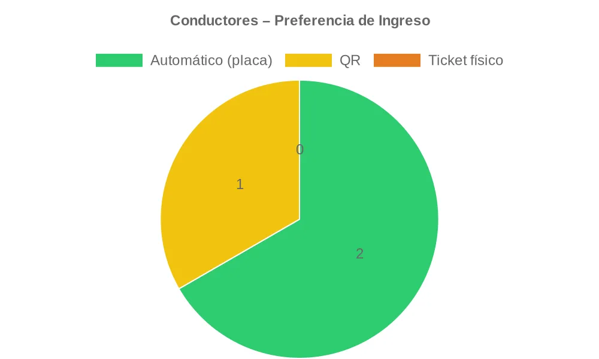
Problemas frecuentes:

Nivel tecnológico:
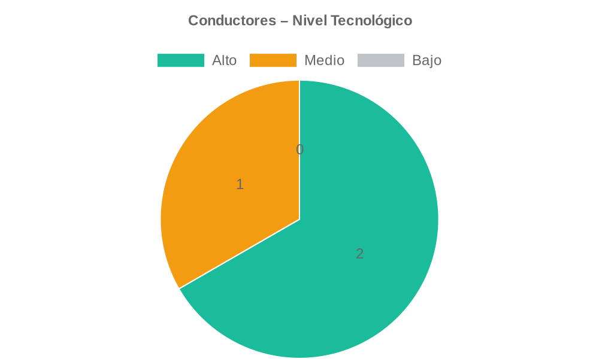
2. Dina Zimbabue

Dispositivos de gestión:

Problemas de gestión:

Nivel tecnológico:

User Task Matrix: Diego Luxemburgo y Dina Zimbabue
Con el fin de elaborar un Task Matrix adecuado para el proyecto, se han considerado los dos segmentos objetivo, producto del análisis de entrevistas, es decir, Conductores e Administradores de parking.
User Task Matrix – Diego Luxemburgo - Conductores:
| User Task | Frecuencia | Importancia |
|---|---|---|
| Buscar estacionamiento cercano al destino | Alta | Alta |
| Hacer fila para pagar el estacionamiento (manual o con ticket) | Alta | Alta |
| Retirar ticket y conservarlo hasta el pago | Alta | Alta |
| Buscar la máquina de pago en el local | Media | Alta |
| Esperar a que el lector de ticket funcione correctamente | Media | Alta |
| Coordinar pagos en efectivo o encontrar sencillo | Media | Alta |
| Volver al vehículo antes que se venza el ticket o la tarifa | Media | Media |
| Revisar si la cochera está operativa, abierta o disponible | Baja | Media |
| Lidiar con problemas en la barrera de ingreso/salida | Baja | Alta |
| Llamar o buscar personal de soporte del estacionamiento | Baja | Media |
User Task Matrix – Dina Zimbabue - Administradores de parking:
| User Task | Frecuencia | Importancia |
|---|---|---|
| Supervisar el ingreso/salida del personal y visitantes | Alta | Alta |
| Coordinar al personal para emitir tickets y controlar accesos | Alta | Alta |
| Validar manualmente placas de vehículos conocidos | Alta | Alta |
| Solucionar problemas de lectura de placas o pérdida de tickets | Media | Alta |
| Redactar reportes de ingresos/salidas de forma manual o en Excel | Media | Alta |
| Contactar al personal de vigilancia ante incidentes | Media | Media |
| Verificar la disponibilidad del local mediante rondas visuales | Media | Alta |
| Atender quejas por demoras en el ingreso o salida | Baja | Alta |
| Entrenar a nuevo personal en protocolos y sistemas antiguos | Baja | Media |
| Buscar registros manuales para auditoría o consultas | Baja | Alta |
User Journey Mapping: Situación As-Is
En esta sección se presentan los User Journey Maps correspondientes a los perfiles de usuario elaborados para ParkUp. Los mapas muestran el recorrido actual de los usuarios antes de la existencia de la solución propuesta, ilustrando los puntos de contacto, frustraciones y oportunidades de mejora a lo largo del proceso.
Los User Personas fueron creados utilizando la herramienta UXPressia, y los Journey Maps a continuación se han vinculado con cada uno de ellos.
User Journey Map - Diego Luxemburgo (Conductor):
Diego es un profesional independiente con alta movilidad en Lima. Usa su auto diariamente para llegar a distintos puntos de interés. Su objetivo es estacionar rápido y continuar con su rutina sin perder tiempo en tareas manuales o esperas innecesarias. Actualmente, se enfrenta a un sistema tradicional de estacionamientos que requiere tickets físicos, pagos manuales y barreras que demoran.
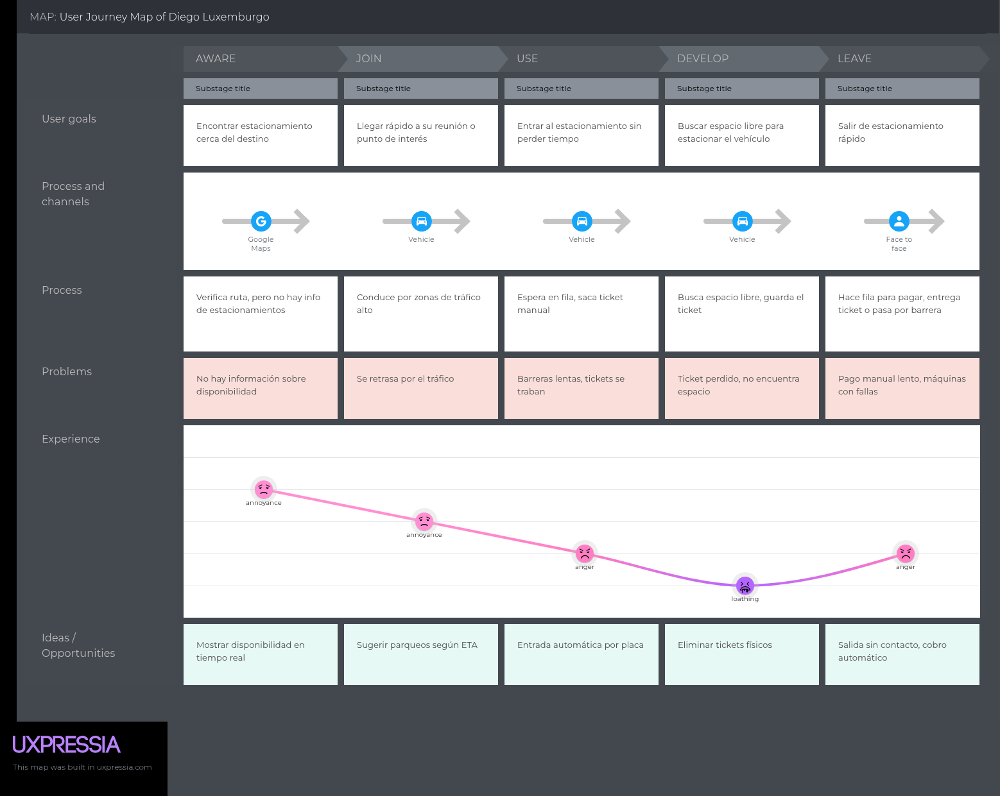
User Journey Map - Dina Zimbabue (Administradora de estacionamiento):
Dina es administradora de varios estacionamientos privados y/o corporativos en Lima. Busca eficiencia operativa, minimizar la intervención humana y asegurar la seguridad vehicular sin afectar la experiencia del usuario. Actualmente, depende de procedimientos manuales, personal de vigilancia y herramientas poco automatizadas como Excel y WhatsApp para gestionar entradas y salidas.

El empathy mapping es una herramienta de diseño centrado en el usuario que permite visualizar y comprender de manera integral lo que piensan, sienten, ven, dicen, escuchan, así como los dolores y ganancias de los usuarios respecto a un producto o servicio. Esta técnica se utiliza para empatizar con los diferentes segmentos de usuarios, identificar sus necesidades reales y diseñar soluciones efectivas que respondan a sus experiencias y expectativas.
Empathy Mapping - Conductores:
En el caso de los conductores, el empathy mapping revela que se sienten ansiosos y frustrados ante los procesos tradicionales basados en tickets en papel, lo que genera demoras y complicaciones como la pérdida de comprobantes. Observan entornos con largas filas, máquinas antiguas y falta de información sobre la disponibilidad de espacios y cobro de los estacionamientos. Además, sus comentarios y acciones reflejan la necesidad de contar con un método más ágil y confiable para poder estacionar y realizar el pago sin contratiempos, evidenciando el deseo de simplificar y optimizar la experiencia de estacionamiento.
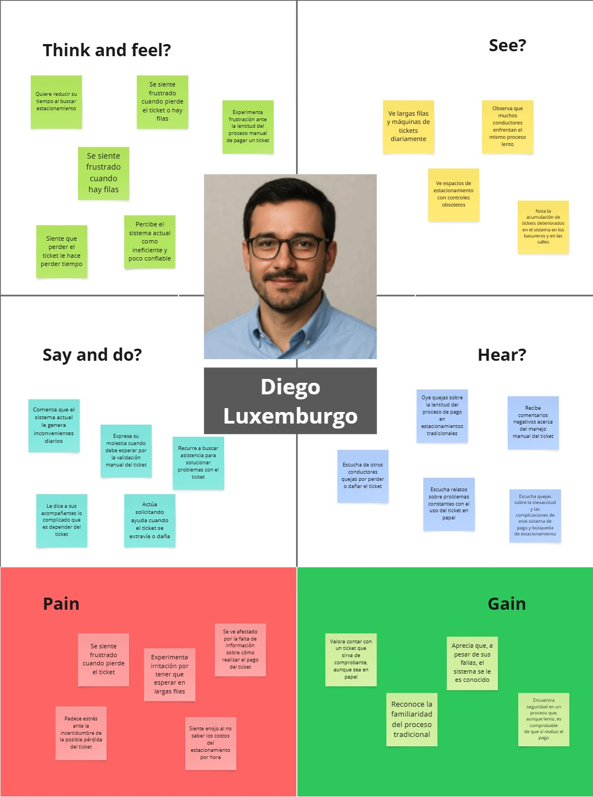
Empathy Mapping - Administradores de parking:
Para los administradores de parking, el empathy mapping destaca la presión y el estrés derivados de gestionar un sistema manual que depende de registros en papel y anotaciones manuales. Se percibe su frustración por la ineficiencia y la vulnerabilidad de los datos, lo que a menudo dificulta la supervisión precisa del ingreso y egreso de vehículos. Asimismo, estos responsables manifiestan la necesidad de disponer de una herramienta que centralice y digitalice la información, de forma que puedan mejorar la trazabilidad, responder rápidamente a incidencias y optimizar el control general del estacionamiento.

El As-Is Scenario Mapping es una herramienta que permite visualizar el estado actual de un proceso, identificando qué hacen, piensan y sienten los usuarios en cada fase. Sirve para comprender de manera detallada los pasos, los puntos de dolor y las emociones involucradas en un flujo de trabajo tradicional, facilitando la identificación de oportunidades de mejora.
As-is Scenario Mapping - Conductores:
El As-is Scenario Mapping para los conductores revela un proceso tradicional basado en tickets en papel. Al ingresar, los conductores recogen un ticket físico y deben buscar manualmente un espacio de estacionamiento, enfrentándose a incertidumbre y demoras. Durante el pago y la salida, se experimentan largas filas, riesgos de extravío y frustración general por la lentitud del sistema. En cada fase, se aprecia una mezcla de rutina, preocupación y descontento ante la ineficiencia del proceso manual.
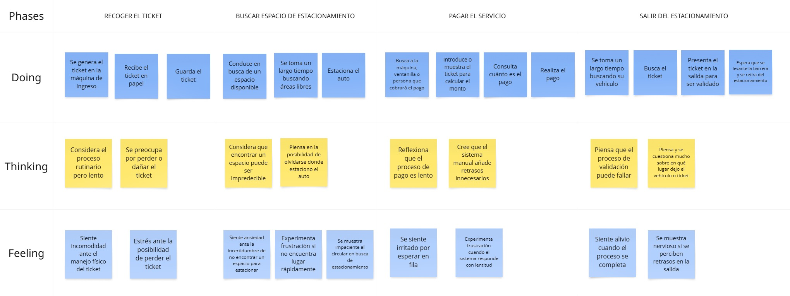
As-is Scenario Mapping - Administradores de parking:
Para los administradores de parking, el As-Is Scenario Mapping expone una gestión marcada por la dependencia de registros manuales y comprobantes en papel. Las tareas diarias incluyen la anotación de datos, la verificación física mediante rondas y la supervisión a través de cámaras de seguridad, lo que genera una alta carga de trabajo y vulnerabilidad en el control de la información.

Para mantener un lenguaje estándar en el equipo de trabajo y asegurar una comunicación clara entre desarrolladores, diseñadores, stakeholders y otros participantes del proyecto, se ha definido un Lenguaje Ubicuo basado en los principios de Domain-Driven Design (DDD).
Este glosario formaliza los términos clave utilizados en el dominio del sistema de estacionamiento inteligente para ParkUp, con el objetivo de evitar ambigüedades, mejorar la trazabilidad entre conceptos de negocio y su representación en el software.
VehicleSession: El ciclo completo de la presencia de un vehículo en el sistema de estacionamiento, desde que es detectado al ingresar hasta que se confirma su salida.
AutoEntry: Proceso mediante el cual un vehículo es reconocido (por placa, sensores o etiquetas) y se le permite el ingreso sin interacción manual.
AutoExit: Proceso de reconocimiento de la intención de salida del vehículo y ejecución automática de la salida, incluyendo el cálculo de tarifas y apertura de barrera si aplica.
RecognitionUnit: Subsistema (hardware y software) encargado de identificar vehículos mediante reconocimiento de placas, RFID o BLE.
ParkingCredential: Identificador virtual que permite al sistema reconocer un vehículo o usuario. Puede ser una placa, una ID móvil, una etiqueta, etc.
FrictionlessFlow: Estado del sistema en el cual los vehículos ingresan y salen sin detenerse ni interactuar físicamente o digitalmente.
SmartBarrier: Barrera conectada vía IoT que se abre automáticamente al verificar correctamente una ParkingCredential válida.
AccessEvent: Evento registrado por el sistema al detectar el ingreso o salida de un vehículo.
SessionAlert: Notificación en tiempo real al administrador ante eventos inusuales como placas no reconocidas, estancias prolongadas o intento de ingreso múltiple.
Zone: Área física definida dentro del estacionamiento (ej. Zona de Entrada, Zona de Salida, Zona de Administración), usada para lógica del sistema y mapeo de eventos.
ParkingProfile: Configuración específica por usuario que define su comportamiento en entradas, salidas, alertas, preferencias de pago y reconocimiento.
FastTrackLane: Carril dedicado para usuarios con ParkingCredential válida y alta fiabilidad de reconocimiento. Optimiza la fluidez.
PlateMismatch: Evento en el cual el sistema no puede asociar una placa detectada con ninguna ParkingCredential registrada, lo que genera un SessionAlert.
AdminConsole: Interfaz usada por administradores para monitorear AccessEvents, configurar el sistema, recibir alertas y generar reportes.
ManualOverride: Acción administrativa que omite el sistema automático debido a excepciones como fallos de reconocimiento o caídas del sistema.
RecognitionConfidence: Valor porcentual que indica el nivel de certeza con que el sistema reconoce una placa o vehículo. Se usa para decidir acciones automáticas o alertas.
UserIntent: Intención inferida del conductor al acercarse al sistema (por ejemplo: entrar, salir, detenerse brevemente), utilizada para anticipar respuestas del sistema.
QueueEvacuation: Respuesta automática para evitar congestión en entradas/salidas durante horas pico, activando todas las SmartBarriers para evacuar rápidamente.
TicketlessSession: Sesión de estacionamiento completada sin emisión de tickets físicos o virtuales.
AccessAudit: Registro detallado de todos los AccessEvents y decisiones del sistema relacionadas con una VehicleSession específica. Útil para auditoría y soporte.
IdentityVerificationFallback: Método alternativo de verificación usado cuando la ParkingCredential principal falla (ej. reconocimiento facial, confirmación vía app).
FastExit: Función para usuarios preautorizados que permite salir de inmediato gracias a credenciales y pagos almacenados, sin necesidad de detenerse.
OperationalSilence: Estado ideal del sistema donde no se requiere atención del usuario ni intervención del administrador.
EntryAnomaly: Comportamiento inusual durante el ingreso, como demoras en el reconocimiento, ingreso de múltiples vehículos, o placas conflictivas.
StaffBypass: Mecanismo que permite a personal autorizado saltarse los pasos de reconocimiento mediante credenciales especiales o interruptores manuales.
El to-be scenario mapping es una herramienta que describe cómo será la experiencia ideal del usuario al interactuar con una solución propuesta, como una aplicación móvil o una plataforma web. A través de fases clave del proceso, se detallan las acciones (doing), pensamientos (thinking) y emociones (feeling) de los usuarios al usar el producto, permitiendo visualizar mejoras respecto al escenario actual (as-is). Esta herramienta ayuda a validar si la solución responde a las necesidades del usuario y facilita la identificación de oportunidades para optimizar su experiencia.
To-Be Scenario Mapping - Conductores:
El To-Be Scenario Mapping para conductores muestra una experiencia digital fluida y eficiente gracias al uso de la aplicación móvil. Desde el ingreso, los usuarios pueden escanear un código QR para obtener un ticket digital y acceder al sistema del estacionamiento, encontrar espacios disponibles mediante una guía interactiva, realizar pagos sin contacto desde la app y salir del estacionamiento sin fricciones. Este nuevo flujo mejora significativamente la comodidad, reduce tiempos de espera y elimina los puntos de frustración del proceso tradicional.

To-Be Scenario Mapping - Administradores de Parking:
El To-Be Scenario Mapping para administradores de parking muestra cómo, al usar el sistema web, pueden automatizar el registro de ingresos, monitorear en tiempo real la ocupación, verificar pagos de forma eficiente y gestionar incidencias operativas como pagos no registrados. La digitalización del proceso reduce errores y mejora el control en la gestión diaria del estacionamiento.
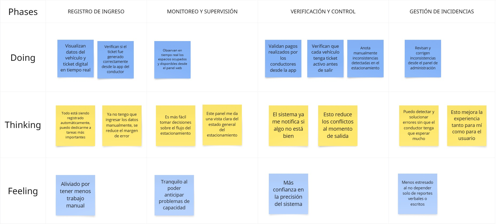
Epics
| Epic | Description |
|---|---|
| EP01 (Landing Page atractiva de ParkUp) | Como visitante, deseo una landing page intuitiva y atractiva que proporcione información clara sobre la aplicación de ParkUp, para facilitar mi toma de decisiones y acelerar mi uso de la plataforma. |
| EP02 (Integración y desarrollo de Dispositivos IoT de Parking y Monitoreo) | Como developer, quiero que los sistemas de parqueo estén conectados mediante IoT, para obtener información en tiempo real sobre la disponibilidad de espacios y mejorar la experiencia de estacionamiento. |
| EP03 (Gestión de cuentas de usuarios en la Mobile App de ParkUp) | Como conductor, quiero registrarme, iniciar sesión y gestionar mi cuenta desde la app móvil de ParkUp, para acceder de manera segura y controlar mis datos personales. |
| EP04 (Entrada de parqueo) | Como conductor, quiero poder ingresar a un estacionamiento escaneando un código QR en la entrada con mi celular, para registrarse al sistema de estacionamiento virtual de mi destino. |
| EP05 (Notificaciones y Alertas) | Como conductor, quiero recibir notificaciones y alertas confirmando mi entrada, pago y tiempo restante de tolerancias de pago, para estar informado y tomar decisiones oportunas. |
| EP06 (Gestión de pago en línea) | Como conductor, quiero registrar mis tarjetas y preferencias de pago para pagar en línea o automáticamente por mi celular, para los momentos en qué desee retirarme del estacionamiento |
| EP07 (Pago y retiro del estacionamiento) | Como conductor, quiero realizar el pago en línea o automático al momento de querer retirarme del estacionamiento, para poder salir de la ubicación sin hacer cola alguna. |
| EP08 (Gestión de cuentas administrativas de ParkUp) | Como administrador, quiero obtener una cuenta, iniciar sesión y gestionar mi cuenta desde la aplicación web de ParkUp, para acceder de manera segura al sistema de monitoreo de ParkUp. |
| EP09 (Gestión de Información de Sistemas IoT) | Como administrador, quiero acceder y gestionar la información generada por los dispositivos IoT, para monitorear el sistema de parqueo y tomar decisiones basadas en datos. |
| EP10 (Optimización de la API) | Como desarrollador, quiero implementar los protocolos de comunicación correctos de cada endpoint API para mejorar la eficiencia en la entrega de recursos y optimizar el rendimiento del sistema. |
| EP11 (Sistema de Parking Spots) | Como conductor, quiero ver los estacionamientos disponibles en mi ubicación por luz LED, para poder saber donde estacionarme. |
| EP01 (Landing Page atractiva de ParkUp) | Como visitante, deseo una landing page intuitiva y atractiva que proporcione información clara sobre la aplicación de ParkUp, para facilitar mi toma de decisiones y acelerar mi uso de la plataforma. |
|---|---|
| US01 | Barra de navegación en Landing Page |
| US02 | Encabezado de Bienvenida de Landing Page |
| US03 | Sección Sobre Nosotros de Landing page |
| US04 | Demostración del funcionamiento de la aplicación en el Landing Page |
| US05 | Descripción de las funcionalidades de la aplicación en el Landing Page |
| US06 | Reseñas en el Landing page |
| US07 | Preguntas y Respuestas en Landing Page |
| US08 | Sección de Clientes Satisfechos |
| US09 | Sección de Contáctanos en Landing Page |
| US10 | Footer en Landing Page |
| EP02 (Integración y desarrollo de Sistemas IoT de Parking y Monitoreo) | Como developer, quiero que los sistemas de parqueo estén conectados mediante IoT, para obtener información en tiempo real sobre la disponibilidad de espacios y mejorar la experiencia de estacionamiento. |
|---|---|
| TS01 | Puerta de Entrada del Parking IoT con Cámara |
| TS02 | Puerta de Salida del Parking IoT con Cámara |
| TS03 | Sensores Magnéticos IoT en cada Estacionamiento |
| TS04 | IoT Gateway |
| TS05 | Edge Node IoT en cada Estacionamiento |
| TS08 | Cámaras de Vigilancia IoT |
| EP03 (Gestión de cuentas de usuarios en la Mobile App de ParkUp) | Como conductor, quiero registrarme, iniciar sesión y gestionar mi cuenta desde la app móvil de ParkUp, para acceder de manera segura y controlar mis datos personales. |
|---|---|
| US11 | Registro de conductor como usuario |
| US12 | Inicio de sesión de conductor |
| TS06 | Autenticación basada en token JWT |
| US13 | Edición de perfil de conductor |
| US14 | Recuperación de contraseña |
| US15 | Eliminación de cuenta de conductor |
| EP04 (Entrada de parqueo) | Como conductor, quiero poder ingresar a un estacionamiento escaneando un código QR en la entrada con mi celular, para registrarse al sistema de estacionamiento virtual de mi destino. |
|---|---|
| US16 | Escaneo QR mediante celular por el conductor |
| US17 | Visualización de estacionamientos disponibles, en tiempo-real, más cercanos al conductor |
| US18 | Confirmación automática o manual de estacionamiento realizado por el conductor |
| US19 | Visualización de menú de estacionamiento para el conductor |
| EP05 (Notificaciones y Alertas) | Como conductor, quiero recibir notificaciones y alertas confirmando mi entrada, pago y tiempo restante de tolerancias de pago, para estar informado y tomar decisiones oportunas. |
|---|---|
| US20 | Notificación de entrada a estacionamiento para el conductor |
| US21 | Notificación de pago de estacionamiento para el conductor |
| US22 | Notificación de poco tiempo antes del fin de la tolerancia de pago de un estacionamiento para el conductor |
| US23 | Notificación de fin de tolerancia de pago de un estacionamiento para el conductor |
| EP06 (Pago en línea al momento del retiro del estacionamiento) | Como conductor, quiero pagar en línea o automáticamente por mi celular al momento de querer retirarme del estacionamiento, para poder salir de la ubicación sin hacer cola alguna. |
|---|---|
| TS07 | Permiso de bancas para utilizar sus datos en la pasarela de pago |
| US24 | Registro de tarjeta de crédito/débito del conductor |
| US25 | Eliminación de tarjeta de crédito/débito del conductor |
| US26 | Visualización de listado de tarjetas de crédito/débito del conductor |
| EP07 (Pago y retiro del estacionamiento) | Como conductor, quiero realizar el pago en línea o automático al momento de querer retirarme del estacionamiento, para poder salir de la ubicación sin hacer cola alguna. |
|---|---|
| US27 | Activación y Desactivación de pago automático del conductor |
| US28 | Realización de convalidación de pago del estacionamiento del conductor |
| US29 | Realización del pago a cancelar del estacionamiento del conductor |
| US30 | Retiro ininterrumpido del estacionamiento por pago automático |
| US31 | Retiro posterior al pago manual del estacionamiento |
| US32 | Visualización de tiempo de tolerancia desde cancelación del pago del estacionamiento |
| US33 | Visualización de boleta virtual e interactiva del estacionamiento realizado |
| US34 | Visualización de listado de boletas virtuales e interactivas de estacionamientos realizados |
| EP08 (Gestión de cuentas administrativas de ParkUp) | Como administrador, quiero obtener una cuenta, iniciar sesión y gestionar mi cuenta desde la aplicación web de ParkUp, para acceder de manera segura al sistema de monitoreo de ParkUp. |
|---|---|
| US35 | Obtención de cuenta administrativa de un estacionamiento |
| US36 | Inicio de sesión de administrador |
| US37 | Recuperación de una cuenta administrativa por correo vinculado |
| US38 | Servicio al cliente para edición o recuperación de una cuenta administrativa de un estacionamiento |
| US39 | Edición del perfil de una cuenta administrativa |
| EP09 (Gestión de Información de Dispositivos IoT) | Como administrador, quiero acceder y gestionar la información generada por los dispositivos IoT, para monitorear el sistema de parqueo y tomar decisiones basadas en datos. |
|---|---|
| TS09 | Dispositivos de Monitoreo de Funcionalidad de otros Dispositivos IoT |
| US40 | Visualización de Resumen Estadístico del uso del Estacionamiento como menú principal |
| US41 | Visualización de las cámaras de seguridad del estacionamiento |
| US42 | Visualización detallada de una cámara de seguridad del estacionamiento |
| US43 | Visualización del listado de conductores estacionados actualmente y anteriormente |
| US44 | Visualización del listado de conductores estacionados durante un día en específico. |
| US45 | Visualización detallada de un conductor en específico. |
| US46 | Visualización de sistema de resolución de casos extremos en el estacionamiento |
| US47 | Cancelación manual del pago de algún conductor por caso extremo |
| US48 | Visualización de monitoreo de la funcionalidad de los dispositivos IoT del estacionamiento |
| EP10 (Optimización de la API) | Como desarrollador, quiero implementar los protocolos de comunicación correctos de cada endpoint API para mejorar la eficiencia en la entrega de recursos y optimizar el rendimiento del sistema. |
|---|---|
| TS10 | Implementación de un servicio IAM con REST API |
| TS11 | Implementación de un servicio Camera Feed con WebRTC |
| TS13 | Implementación de un servicio Payments con REST API |
| TS14 | Implementación de un servicio Parking Circulation con REST API |
| TS15 | Implementación de un servicio Monitoring con REST API |
| TS16 | Implementación de un servicio Ticket Validation con REST API |
| TS17 | Implementación de un servicio Notifications con REST API |
| TS18 | Implementación de un servicio Profiles con REST API |
| EP11 (Sistema de Parking Spots) | Como conductor, quiero ver los estacionamientos disponibles en mi ubicación por luz LED, para poder saber donde estacionarme. |
|---|---|
| TS12 | Implementación de un servicio Parking Spots con REST API |
| US49 | Cambio de luz LED cuando un carro se estaciona |
User Stories
| Epic / Story ID | Título | Descripción | Criterios de Aceptación | Relacionado con (Epic ID) |
|---|---|---|---|---|
| US01 | Barra de navegación de Landing Page | Como visitante, quiero una barra de navegación accesible para moverme fácilmente entre las secciones principales de la landing page. | Feature: Barra de navegación de Landing Page Scenario: Visualización y funcionamiento de la barra de navegación Given que el visitante accede a la landing page When visualiza la parte superior del sitio Then debería ver una barra de navegación con enlaces a las secciones principales And al hacer clic en un enlace, debería desplazarse a esa sección Scenario: Error en la carga de la barra de navegación Given que el visitante accede a la landing page When ocurre un fallo en la carga de la barra de navegación Then debería mostrarse un mensaje de error |
EP01 |
| US02 | Encabezado de Bienvenida de Landing Page | Como visitante, quiero visualizar de forma inmediata un encabezado con el propósito de la aplicación ParkUp, junto con un llamado a la acción claro que me motive a explorar la plataforma. | Feature: Encabezado de Bienvenida de Landing Page Scenario: Visualización del encabezado de bienvenida Given que el visitante accede a la landing page When observa la parte superior del sitio Then debería ver un encabezado claro con el propósito de la aplicación ParkUp And debería ver un llamado a la acción claro para explorar la plataforma Scenario: Falta de visualización del encabezado Given que el visitante accede a la landing page When el encabezado no carga correctamente Then debería mostrarse un mensaje de error indicando que el encabezado no está disponible |
EP01 |
| US03 | Sección Sobre Nosotros de Landing Page | Como visitante, quiero conocer la misión, visión y el equipo de desarrollo de ParkUp, con el fin de generar confianza en el proyecto y comprender su impacto. | Feature: Sección Sobre Nosotros de Landing Page Scenario: Visualización de la sección "Sobre Nosotros" Given que el visitante accede a la landing page When hace clic en el enlace de "Sobre Nosotros" en la barra de navegación Then debería visualizar la misión, visión y el equipo de desarrollo de ParkUp And la información debe estar organizada y ser clara Scenario: Error en la carga de la sección "Sobre Nosotros" Given que el visitante accede a la landing page When ocurre un fallo en la carga de la sección "Sobre Nosotros" Then debería mostrarse un mensaje de error |
EP01 |
| US04 | Demostración del funcionamiento de la aplicación en la Landing Page | Como visitante, quiero observar una demostración visual del funcionamiento de la aplicación, para entender de manera práctica su utilidad y facilidad de uso. | Feature: Demostración del funcionamiento de la aplicación en el Landing Page Scenario: Visualización de la demostración del funcionamiento de la aplicación Given que el visitante accede a la landing page When hace clic en el enlace de la demostración Then debería ver un video o animación visual que explique cómo funciona la aplicación ParkUp And el contenido debe ser claro y fácil de entender Scenario: Error en la carga de la demostración Given que el visitante accede a la landing page When ocurre un fallo en la carga de la demostración Then debería mostrarse un mensaje de error |
EP01 |
| US05 | Descripción de las funcionalidades de la aplicación en el Landing Page | Como visitante, quiero explorar las funcionalidades principales de ParkUp, a fin de evaluar si satisfacen mis necesidades respecto a la gestión de estacionamientos. | Feature: Descripción de las funcionalidades de la aplicación en el Landing Page Scenario: Visualización de las funcionalidades de la aplicación Given que el visitante accede a la landing page When hace clic en el enlace de "Funcionalidades" en la barra de navegación Then debería visualizar una lista clara y detallada de las funcionalidades principales de ParkUp And cada funcionalidad debe estar acompañada de una breve descripción Scenario: Error en la carga de las funcionalidades Given que el visitante accede a la landing page When ocurre un fallo en la carga de la sección de funcionalidades Then debería mostrarse un mensaje de error |
EP01 |
| US06 | Reseñas en el Landing Page | Como visitante, quiero leer opiniones de otros usuarios sobre la aplicación, con el objetivo de obtener una referencia confiable sobre la efectividad del producto. | Feature: Reseñas en el Landing Page Scenario: Visualización de las reseñas de otros usuarios Given que el visitante accede a la landing page When hace clic en el enlace de "Reseñas" en la barra de navegación Then debería visualizar una lista de opiniones de otros usuarios sobre la aplicación And las reseñas deben ser verídicas y fácilmente legibles Scenario: Error en la carga de las reseñas Given que el visitante accede a la landing page When ocurre un fallo en la carga de las reseñas Then debería mostrarse un mensaje de error |
EP01 |
| US07 | Preguntas y Respuestas en Landing Page | Como visitante, quiero acceder a una sección de preguntas frecuentes que resuelva dudas comunes de manera rápida y concisa. | Feature: Preguntas y Respuestas en Landing Page Scenario: Visualización de la sección de Preguntas y Respuestas Given que el visitante accede a la landing page When hace clic en el enlace de "Preguntas y Respuestas" en la barra de navegación Then debería visualizar una lista de preguntas frecuentes con respuestas claras y concisas Scenario: Error en la carga de las preguntas y respuestas Given que el visitante accede a la landing page When ocurre un fallo en la carga de la sección de Preguntas y Respuestas Then debería mostrarse un mensaje de error |
EP01 |
| US08 | Clientes Satisfechos en Landing Page | Como visitante, quiero visualizar una sección de clientes satisfechos que muestre anteriores casos de exito para asegurarme la funcionalidad de la aplicación. | Feature: Clientes Satisfechos en Landing Page Scenario: Visualización de la sección de Clientes Satisfechos Given que el visitante accede a la landing page When hace clic en el enlace de "Clientes Satisfechos" en la barra de navegación Then debería visualizar una lista de establecimientos y clientes usuarios del sistema. Scenario: Error en la carga de los Clientes Satisfechos Given que el visitante accede a la landing page When ocurre un fallo en la carga de la sección de Clientes Satisfechos Then debería mostrarse un mensaje de error |
EP01 |
| US09 | Sección de Contáctanos en Landing Page | Como visitante, quiero disponer de una sección de contacto para comunicarme con el equipo de ParkUp en caso de requerir más información o asistencia. | Feature: Sección de Contáctanos en Landing Page Scenario: Visualización de la sección de contacto Given que el visitante accede a la landing page When hace clic en el enlace de "Contáctanos" en la barra de navegación Then debería visualizar un formulario de contacto Scenario: Error en la carga de la sección de contacto Given que el visitante accede a la landing page When ocurre un fallo en la carga de la sección de "Contáctanos" Then debería mostrarse un mensaje de error |
EP01 |
| US10 | Footer en Landing Page | Como visitante, quiero encontrar en el pie de página enlaces útiles y de acceso rápido que complementen mi navegación por el sitio. | Feature: Footer en Landing Page Scenario: Visualización del pie de página Given que el visitante accede a la landing page When llega al final de la página Then debería visualizar enlaces útiles en el pie de página And los enlaces deben ser accesibles y funcionales Scenario: Error en la carga del pie de página Given que el visitante accede a la landing page When ocurre un fallo en la carga del pie de página Then debería mostrarse un mensaje de error |
EP01 |
| US11 | Registro de conductor como usuario | Como developer, quiero que el conductor pueda registrarse como usuario en el sistema, para poder acceder a las funcionalidades del sistema de parqueo conectado por IoT. | Feature: Registro de conductor como usuario Scenario: Registro exitoso de conductor Given que el conductor accede al registro When ingresa sus datos personales y presiona "Registrarse" Then debería ver un mensaje de éxito indicando que el registro fue exitoso And el conductor debería recibir un correo de confirmación Scenario: Error en el registro por datos incompletos Given que el conductor accede a la página de registro When ingresa datos incompletos y presiona "Registrarse" Then debería ver un mensaje de error indicando qué campos faltan And no debería ser registrado en el sistema |
EP01 |
| US12 | Inicio de sesión de conductor | Como developer, quiero que el conductor pueda iniciar sesión en el sistema utilizando sus credenciales, para que pueda acceder a la plataforma y gestionar su estacionamiento. | Feature: Inicio de sesión de conductor Scenario: Inicio de sesión exitoso Given que el conductor tiene una cuenta registrada When ingresa sus credenciales correctas y presiona "Iniciar sesión" Then debería ser redirigido a la página principal del sistema And debería ver un mensaje de bienvenida Scenario: Error en el inicio de sesión por credenciales incorrectas Given que el conductor tiene una cuenta registrada When ingresa credenciales incorrectas y presiona "Iniciar sesión" Then debería ver un mensaje de error indicando que las credenciales son incorrectas And no debería acceder a la plataforma |
EP03 |
| US13 | Edición de perfil de conductor | Como developer, quiero que el conductor pueda editar su perfil, para que pueda actualizar sus datos personales y guardar su método de pago de preferencia en el sistema. | Feature: Edición de perfil de conductor Scenario: Edición exitosa del perfil Given que el conductor está autenticado en el sistema When ingresa a la sección de "Editar perfil" y actualiza su información Then debería ver un mensaje de éxito indicando que los cambios fueron guardados And los cambios deberían reflejarse en su perfil Scenario: Error al editar perfil por datos inválidos Given que el conductor está autenticado en el sistema When ingresa datos inválidos en el formulario de perfil y presiona "Guardar cambios" Then debería ver un mensaje de error indicando qué datos son inválidos And no deberían guardarse los cambios |
EP03 |
| US14 | Recuperación de contraseña | Como developer, quiero permitir que el conductor recupere su contraseña de forma segura, para que pueda recuperar el acceso a su cuenta en caso de olvidar sus credenciales. | Feature: Recuperación de contraseña Scenario: Recuperación exitosa de contraseña Given que el conductor ha olvidado su contraseña When ingresa su correo en la sección de "Recuperar contraseña" y presiona "Enviar enlace" Then debería recibir un correo con el enlace para restablecer su contraseña And debería poder ingresar una nueva contraseña Scenario: Error en la recuperación de contraseña por correo no registrado Given que el conductor ha olvidado su contraseña When ingresa un correo no registrado en la sección de "Recuperar contraseña" Then debería ver un mensaje de error indicando que el correo no está registrado And no debería recibir un correo de recuperación |
EP03 |
| US15 | Eliminación de cuenta de conductor | Como developer, quiero que el conductor pueda eliminar su cuenta de usuario, para permitirle desvincularse completamente del sistema cuando así lo desee. | Feature: Eliminación de cuenta de conductor Scenario: Eliminación exitosa de cuenta Given que el conductor está autenticado en el sistema When solicita la eliminación de su cuenta y confirma la acción Then su cuenta debería ser eliminada permanentemente del sistema And debería ver un mensaje de confirmación indicando que la cuenta ha sido eliminada Scenario: Error al intentar eliminar cuenta sin confirmación Given que el conductor está autenticado en el sistema When solicita la eliminación de su cuenta pero no confirma la acción Then no debería eliminarse su cuenta And debería ver un mensaje de advertencia indicando que la acción no se completó |
EP03 |
| US16 | Escaneo QR mediante celular por el conductor | Como conductor, quiero poder escanear un código QR con mi celular al llegar al estacionamiento, para poder acceder al sistema de estacionamientos del lugar. | Feature: Escaneo QR mediante celular por el conductor Scenario: Escaneo exitoso de código QR Given que el conductor llega al estacionamiento y tiene la app instalada When escanea el código QR del estacionamiento usando su celular Then debería ser redirigido automáticamente al sistema de parqueo And debería ver la disponibilidad de espacios Scenario: Error al escanear código QR Given que el conductor llega al estacionamiento y tiene la app instalada When intenta escanear un código QR no válido o ilegible Then debería ver un mensaje de error indicando que el código QR no es válido And no debería ser redirigido al sistema de parqueo |
EP04 |
| US17 | Visualización de estacionamientos disponibles en tiempo real más cercanos al conductor | Como conductor, quiero ver en tiempo real los estacionamientos disponibles más cercanos, para poder tomar decisiones rápidas sobre dónde estacionar. | Feature: Visualización de estacionamientos disponibles, en tiempo real, más cercanos al conductor Scenario: Visualización exitosa de estacionamientos cercanos Given que el conductor está autenticado en el sistema When solicita ver los estacionamientos disponibles cercanos a su ubicación Then debería ver una lista de los estacionamientos disponibles más cercanos Scenario: Error al visualizar estacionamientos disponibles Given que el conductor está autenticado en el sistema When el sistema no puede obtener la información de estacionamientos disponibles por problemas de red Then debería ver un mensaje de error indicando que no se pueden mostrar los estacionamientos And no debería ver una lista de estacionamientos |
EP04 |
| US18 | Confirmación automática o manual de estacionamiento realizado por el conductor | Como conductor, quiero que el sistema confirme automáticamente o me permita confirmar manualmente que he estacionado en el lugar exacto, para garantizar que mi acción sea registrada correctamente. | Feature: Confirmación automática o manual de estacionamiento realizado por el conductor Scenario: Confirmación exitosa de estacionamiento Given que el conductor ha estacionado su vehículo When el sistema detecta automáticamente que el vehículo ha sido estacionado o el conductor lo confirma manualmente Then debería ver un mensaje indicando que el estacionamiento ha sido registrado correctamente And el sistema debería actualizar el estado del espacio de estacionamiento como ocupado Scenario: Error en la confirmación de estacionamiento Given que el conductor ha estacionado su vehículo When el sistema no puede detectar el estacionamiento debido a un error de IoT o el conductor no confirma manualmente Then debería ver un mensaje de error indicando que el estacionamiento no ha sido registrado correctamente And no debería actualizarse el estado del espacio |
EP04 |
| US19 | Visualización de menú de estacionamiento para el conductor | Como conductor, quiero tener acceso a un menú de opciones dentro del sistema de estacionamiento, para gestionar acciones como pago, convalidación y solicitudes adicionales. | Feature: Visualización de menú de estacionamiento para el conductor Scenario: Visualización exitosa del menú de estacionamiento Given que el conductor está autenticado en el sistema When accede al sistema de estacionamiento Then debería ver un menú de opciones con acciones como pago, convalidación y solicitudes adicionales Scenario: Error al cargar el menú de estacionamiento Given que el conductor está autenticado en el sistema When ocurre un fallo al cargar el menú de estacionamiento Then debería ver un mensaje de error indicando que no se pudo cargar el menú And el conductor no debería tener acceso a las opciones |
EP04 |
| US20 | Notificación de entrada a estacionamiento para el conductor | Como conductor, quiero recibir una notificación confirmando mi entrada al estacionamiento, para estar seguro de que mi registro ha sido exitoso y la placa de mi vehículo se haya obtenido correctamente. | Feature: Notificación de entrada a estacionamiento para el conductor Scenario: Notificación exitosa de entrada al estacionamiento Given que el conductor ha ingresado al estacionamiento y su placa ha sido registrada correctamente When el sistema procesa la entrada del vehículo Then el conductor debería recibir una notificación confirmando su entrada al estacionamiento Scenario: Error en la notificación de entrada al estacionamiento Given que el conductor ha ingresado al estacionamiento When hay un problema al registrar la entrada del vehículo Then el conductor debería ver un mensaje de error indicando que la entrada no ha sido procesada correctamente And no debería recibir la notificación de entrada |
EP04 |
| US21 | Notificación de pago de estacionamiento para el conductor | Como conductor, quiero recibir una notificación que confirme el pago de mi estacionamiento, para saber que mi transacción ha sido procesada correctamente. | Feature: Notificación de pago de estacionamiento para el conductor Scenario: Notificación exitosa de pago realizado Given que el conductor ha realizado el pago del estacionamiento When el sistema procesa el pago correctamente Then el conductor debería recibir una notificación confirmando que el pago ha sido procesado Scenario: Error en la notificación de pago Given que el conductor ha intentado realizar el pago del estacionamiento When hay un problema con el pago Then el conductor debería ver un mensaje de error indicando que el pago no ha sido procesado And no debería recibir la notificación de pago exitoso |
EP05 |
| US22 | Notificación de poco tiempo antes del fin de la tolerancia de pago | Como conductor, quiero recibir una notificación cuando el tiempo de tolerancia esté por terminar, y si supero ese tiempo, el sistema automáticamente me solicitará realizar un nuevo pago, para asegurar que el estacionamiento continúe registrado y evitar problemas al salir. | Feature: Notificación de poco tiempo antes del fin de la tolerancia de pago de un estacionamiento para el conductor Scenario: Notificación exitosa antes de que termine el tiempo de tolerancia Given que el conductor ha pagado el estacionamiento When el tiempo de tolerancia está por finalizar Then el conductor debería recibir una notificación indicando que el tiempo de tolerancia está por terminar Scenario: Error en la notificación de tiempo de tolerancia Given que el conductor ha pagado el estacionamiento When el sistema no puede calcular correctamente el tiempo de tolerancia restante Then el conductor debería recibir un mensaje de error o no recibir la notificación a tiempo |
EP05 |
| US23 | Notificación de fin de tolerancia de pago de un estacionamiento | Como conductor, quiero recibir una notificación cuando el tiempo de tolerancia de pago haya terminado, para saber qué debo pagar de nuevo. | Feature: Notificación de fin de tolerancia de pago de un estacionamiento para el conductor Scenario: Notificación exitosa de fin de tolerancia Given que el conductor ha pagado el estacionamiento When el tiempo de tolerancia ha terminado Then el conductor debería recibir una notificación indicando que debe realizar un nuevo pago Scenario: Error en la notificación de fin de tolerancia Given que el conductor ha pagado el estacionamiento When el sistema no puede procesar correctamente el tiempo de tolerancia Then el conductor debería ver un mensaje de error indicando que no se pudo enviar la notificación |
EP05 |
| US24 | Registro de tarjeta de crédito/débito del conductor | Como conductor, quiero registrar mi tarjeta de crédito/débito en el sistema, para poder realizar pagos automáticos cuando desee retirar el vehículo del estacionamiento. | Feature: Registro de tarjeta de crédito/débito del conductor Scenario: Registro exitoso de tarjeta de crédito/débito Given que el conductor está autenticado en el sistema When ingresa los detalles de su tarjeta de crédito/débito y confirma Then la tarjeta debería ser registrada en el sistema And el conductor debería ver un mensaje de éxito Scenario: Error al registrar tarjeta de crédito/débito Given que el conductor está autenticado en el sistema When ingresa datos incorrectos o incompletos para registrar su tarjeta Then debería ver un mensaje de error indicando que los datos no son válidos And no se debería registrar la tarjeta en el sistema |
EP06 |
| US25 | Eliminación de tarjeta de crédito/débito del conductor | Como conductor, quiero poder eliminar mi tarjeta de crédito/débito del sistema, para asegurarme de que no se mantengan mis datos de pago almacenados si ya no los necesito. | Feature: Eliminación de tarjeta de crédito/débito del conductor Scenario: Eliminación exitosa de tarjeta de crédito/débito Given que el conductor tiene una tarjeta de crédito/débito registrada When solicita eliminar la tarjeta y confirma la acción Then la tarjeta debería ser eliminada del sistema And el conductor debería recibir un mensaje de confirmación Scenario: Error al intentar eliminar tarjeta de crédito/débito Given que el conductor tiene una tarjeta de crédito/débito registrada When solicita eliminar la tarjeta pero no confirma la acción Then la tarjeta no debería ser eliminada And el conductor debería ver un mensaje indicando que la eliminación no se realizó |
EP06 |
| US26 | Visualización de listado de tarjetas de crédito/débito del conductor | Como conductor, quiero visualizar un listado de las tarjetas de crédito/débito registradas en mi perfil, para poder elegir cuál utilizar al momento de realizar el pago en línea. | Feature: Visualización de listado de tarjetas de crédito/débito del conductor Scenario: Visualización exitosa del listado de tarjetas Given que el conductor tiene varias tarjetas registradas When accede a la sección de "Tarjetas de crédito/débito" en su perfil Then debería ver un listado de las tarjetas registradas con su tipo y último dígito Scenario: Error al intentar visualizar las tarjetas registradas Given que el conductor tiene tarjetas registradas When hay un fallo en la carga del listado de tarjetas Then debería ver un mensaje de error indicando que no se pueden cargar las tarjetas And no debería ver el listado |
EP06 |
| US27 | Activación y Desactivación de pago automático del conductor | Como conductor, quiero poder activar o desactivar el pago automático para mis futuras transacciones de estacionamiento, para decidir cómo realizar el pago al momento de retirarme. | Feature: Activación y Desactivación de pago automático del conductor Scenario: Activación exitosa de pago automático Given que el conductor está autenticado en el sistema When activa la opción de "Pago automático" en su perfil Then el pago automático debería quedar habilitado para sus futuras transacciones And el conductor debería recibir un mensaje de confirmación Scenario: Error al intentar activar el pago automático Given que el conductor está autenticado en el sistema When hay un fallo en la activación del pago automático Then debería ver un mensaje de error indicando que no se pudo activar la opción And el pago automático no debería ser activado |
EP06 |
| US28 | Realización de convalidación de pago del estacionamiento del conductor | Como conductor, quiero realizar la convalidación de mi pago de estacionamiento, para confirmar que mi transacción ha sido procesada correctamente antes de salir. | Feature: Realización de convalidación de pago del estacionamiento del conductor Scenario: Convalidación exitosa del pago Given que el conductor ha realizado el pago del estacionamiento When solicita realizar la convalidación del pago Then el sistema debería confirmar que la transacción ha sido procesada correctamente And el conductor debería ver una notificación de confirmación Scenario: Error al realizar la convalidación de pago Given que el conductor ha intentado realizar la convalidación del pago When hay un problema con el proceso de convalidación Then el conductor debería ver un mensaje de error indicando que la convalidación no fue exitosa And no debería quedar registrado el pago |
EP07 |
| US29 | Realización del pago a cancelar del estacionamiento del conductor | Como conductor, quiero realizar el pago correspondiente al estacionamiento mediante una opción manual o automática, para completar mi transacción y poder retirarme sin problemas. | Feature: Realización del pago a cancelar del estacionamiento del conductor Scenario: Pago exitoso realizado por el conductor Given que el conductor desea pagar por su estacionamiento When realiza el pago mediante el sistema Then el sistema debería procesar el pago correctamente y actualizar el estado del estacionamiento Scenario: Error al realizar el pago Given que el conductor desea pagar por su estacionamiento When hay un problema al procesar el pago Then el conductor debería ver un mensaje de error indicando que el pago no fue exitoso And el estado del estacionamiento no debe actualizarse |
EP07 |
| US30 | Retiro ininterrumpido del estacionamiento por pago automático | Como conductor, quiero poder retirar mi vehículo sin interrupciones después de haber realizado el pago automático, para no tener que hacer ninguna acción adicional. | Feature: Retiro ininterrumpido del estacionamiento por pago automático Scenario: Retiro exitoso después de pago automático Given que el conductor ha activado el pago automático y el pago ha sido procesado correctamente When el conductor llega a la salida del estacionamiento Then debería poder retirar su vehículo sin interrupciones ni acciones adicionales Scenario: Error al retirar el vehículo después de pago automático Given que el conductor ha activado el pago automático y el pago ha sido procesado correctamente When el sistema no permite el retiro del vehículo por un fallo en la validación de pago Then el conductor debería ver un mensaje de error indicando que no puede retirar el vehículo And el vehículo no debería salir del estacionamiento |
EP07 |
| US31 | Retiro posterior al pago manual del estacionamiento | Como conductor, quiero poder retirar mi vehículo después de realizar el pago manual, asegurándome de que la transacción esté confirmada antes de salir del estacionamiento. | Feature: Retiro posterior al pago manual del estacionamiento Scenario: Retiro exitoso después de pago manual Given que el conductor ha realizado un pago manual y la transacción ha sido confirmada When el conductor llega a la salida del estacionamiento Then debería poder retirar su vehículo sin problemas, tras confirmar el pago Scenario: Error al retirar el vehículo después de pago manual Given que el conductor ha realizado un pago manual y la transacción ha sido confirmada When el sistema no valida correctamente el pago del conductor Then el conductor debería ver un mensaje de error indicando que la transacción no ha sido confirmada And no debería poder retirar su vehículo hasta que el problema sea solucionado |
EP07 |
| US32 | Visualización de tiempo de tolerancia desde cancelación del pago | Como conductor, quiero visualizar el tiempo de tolerancia después de cancelar el pago del estacionamiento, para saber cuánto tiempo tengo antes de que se genere una penalización o multa. | Feature: Visualización del tiempo de tolerancia después del pago Scenario: Conductor visualiza el tiempo de tolerancia restante Given que el conductor ha realizado un pago exitoso When accede a la pantalla de tiempo de tolerancia Then el sistema muestra una cuenta regresiva con el tiempo restante Scenario: Conductor intenta ver tolerancia sin haber pagado Given que el conductor no ha realizado un pago When intenta acceder al tiempo de tolerancia Then el sistema muestra un mensaje indicando que no hay tolerancia activa |
EP07 |
| US33 | Visualización de boleta virtual e interactiva del estacionamiento realizado | Como conductor, quiero ver una boleta virtual e interactiva del estacionamiento realizado, para consultar los detalles de mi uso del estacionamiento de forma clara y digital. | Feature: Visualización de boleta virtual interactiva del estacionamiento Scenario: Conductor accede a su boleta reciente Given que el conductor tiene una boleta generada When accede al módulo de boleta Then el sistema muestra los detalles del estacionamiento (hora, pago, ubicación) Scenario: No hay boleta disponible para mostrar Given que el conductor aún no ha completado un estacionamiento When intenta ver una boleta Then el sistema muestra un mensaje de "sin boleta disponible" |
EP07 |
| US34 | Visualización de listado de boletas virtuales e interactivas de estacionamientos realizados | Como conductor, quiero visualizar un listado de todas mis boletas virtuales e interactivas de estacionamientos realizados, para tener un historial de mis pagos y usos anteriores. | Feature: Historial de boletas virtuales de estacionamiento Scenario: Conductor revisa su historial de boletas Given que el conductor tiene estacionamientos previos When accede al historial de boletas Then el sistema muestra una lista con detalles resumidos de cada una Scenario: Conductor sin historial previo Given que el conductor nunca ha estacionado When accede al historial de boletas Then el sistema indica que no hay registros disponibles |
EP07 |
| US35 | Obtención de cuenta administrativa de un estacionamiento | Como administrador, quiero obtener una cuenta administrativa para un estacionamiento, para poder gestionar y supervisar sus operaciones. | Feature: Registro de cuenta administrativa para un estacionamiento Scenario: Administrador solicita y recibe acceso Given que el administrador completa el formulario con los datos del estacionamiento When envía la solicitud Then el sistema genera la cuenta y envía las credenciales por correo Scenario: Solicitud con datos incompletos o inválidos Given que el formulario tiene errores de validación When se intenta enviar Then el sistema rechaza la solicitud y muestra los errores |
EP08 |
| US36 | Inicio de sesión de administrador | Como administrador, quiero iniciar sesión en el sistema, para acceder a las funcionalidades de gestión del estacionamiento. | Feature: Inicio de sesión del administrador Scenario: Acceso exitoso con credenciales válidas Given que el administrador tiene un usuario y contraseña válidos When ingresa sus credenciales en el login Then accede correctamente al sistema Scenario: Intento de login con credenciales incorrectas Given que el administrador ingresa una contraseña errónea When intenta iniciar sesión Then el sistema muestra un mensaje de error And no permite el acceso |
EP08 |
| US37 | Recuperación de una cuenta administrativa por correo vinculado | Como administrador, quiero recuperar mi cuenta administrativa usando mi correo vinculado, para restablecer el acceso en caso de olvido de credenciales. | Feature: Recuperación de cuenta administrativa por correo Scenario: Recuperación exitosa con correo válido Given que el administrador ingresa un correo vinculado a su cuenta When solicita recuperación Then el sistema envía un enlace de restablecimiento al correo Scenario: Correo no vinculado a ninguna cuenta Given que el correo ingresado no está registrado When se solicita recuperación Then el sistema muestra un mensaje de "correo no registrado" |
EP08 |
| US38 | Servicio al cliente para edición o recuperación de una cuenta administrativa | Como administrador, quiero contactar al servicio al cliente para editar o recuperar mi cuenta, para resolver problemas de acceso o errores en los datos de la cuenta. | Feature: Soporte para edición o recuperación de cuenta Scenario: El administrador contacta al soporte y recibe respuesta Given que el administrador completa el formulario de contacto When envía la solicitud al servicio al cliente Then recibe una confirmación y respuesta en menos de 24h Scenario: El formulario de contacto es enviado incompleto Given que el administrador no llena todos los campos requeridos When intenta enviar el formulario Then el sistema muestra los campos obligatorios con errores |
EP08 |
| US39 | Edición del perfil de una cuenta administrativa | Como administrador, quiero editar el perfil de mi cuenta administrativa, para mantener mi información actualizada y correcta. | Feature: Edición del perfil del administrador Scenario: El administrador actualiza su información correctamente Given que el administrador está autenticado When accede a su perfil y modifica su información And guarda los cambios Then el sistema actualiza el perfil correctamente And muestra un mensaje de éxito Scenario: El administrador deja campos requeridos vacíos Given que el administrador accede a la edición del perfil When deja el campo "correo electrónico" vacío And guarda los cambios Then el sistema muestra un mensaje de error de validación |
EP08 |
| US40 | Visualización de Resumen Estadístico del uso del Estacionamiento como menú principal | Como administrador, quiero visualizar un resumen estadístico del uso del estacionamiento como menú principal, para obtener una visión general rápida del desempeño y uso del espacio. | Feature: Resumen estadístico como menú principal Scenario: Acceso exitoso al panel estadístico Given que el administrador inicia sesión en el sistema When accede al menú principal Then se muestran estadísticas de uso actual, histórico y ocupación promedio Scenario: Fallo al cargar estadísticas por error de servicio Given que hay un error en el servicio de estadísticas When el administrador accede al menú principal Then se muestra un mensaje de error And se registra el incidente |
EP08 |
| US41 | Visualización de las cámaras de seguridad del estacionamiento | Como administrador, quiero ver las cámaras de seguridad del estacionamiento, para monitorear en tiempo real lo que sucede en las instalaciones. | Feature: Visualización general de cámaras de seguridad Scenario: El administrador visualiza correctamente todas las cámaras disponibles Given que las cámaras están funcionando When el administrador accede al módulo de cámaras Then se muestran todas las transmisiones en tiempo real Scenario: Una o más cámaras están desconectadas Given que algunas cámaras están fuera de servicio When el administrador accede al módulo de cámaras Then el sistema muestra una indicación de cámara desconectada |
EP09 |
| US42 | Visualización detallada de una cámara de seguridad del estacionamiento | Como administrador, quiero visualizar de forma detallada una cámara de seguridad específica, para enfocar mi atención en un área particular del estacionamiento. | Feature: Vista detallada de una cámara específica Scenario: El administrador selecciona una cámara y visualiza su transmisión Given que la cámara está conectada When el administrador hace clic en una cámara del listado Then se muestra su transmisión en vista ampliada Scenario: La cámara seleccionada no tiene señal Given que la cámara tiene problemas de conexión When el administrador intenta abrir su vista detallada Then el sistema informa que no hay señal disponible |
EP09 |
| US43 | Visualización del listado de conductores estacionados actualmente y anteriormente | Como administrador, quiero ver el listado de conductores actualmente estacionados y de los que han estado anteriormente, para tener control y trazabilidad del uso del estacionamiento. | Feature: Visualización de conductores estacionados Scenario: Visualización de conductores actualmente estacionados Given que hay vehículos estacionados When el administrador accede al módulo de conductores Then se muestra el listado de usuarios presentes Scenario: Error al recuperar historial de estacionados anteriores Given que el sistema presenta un error de conexión con la base de datos When el administrador solicita el historial Then se muestra un mensaje de error temporal |
EP09 |
| US44 | Visualización del listado de conductores estacionados durante un día en específico | Como administrador, quiero ver el listado de conductores que estuvieron estacionados durante un día específico, para realizar análisis o auditorías por fecha. | Feature: Visualización por fecha de conductores estacionados Scenario: El administrador consulta el listado por una fecha válida Given que hay registros del 15 de marzo When selecciona esa fecha en el calendario Then se muestra el listado de conductores de ese día Scenario: El administrador selecciona una fecha sin registros Given que no hay datos del 1 de enero When selecciona esa fecha Then el sistema muestra un mensaje indicando que no hay resultados |
EP09 |
| US45 | Visualización detallada de un conductor en específico | Como administrador, quiero visualizar el detalle de un conductor en específico, para revisar su historial, pagos o incidentes relacionados. | Feature: Visualización del perfil de un conductor Scenario: El administrador accede al perfil detallado de un conductor Given que el conductor está registrado When el administrador lo selecciona en la lista Then se muestra su historial, pagos y eventos Scenario: El conductor no existe en la base de datos Given que el ID del conductor no es válido When se intenta acceder a su detalle Then el sistema muestra un mensaje de "conductor no encontrado" |
EP09 |
| US46 | Visualización de sistema de resolución de casos extremos en el estacionamiento | Como administrador, quiero acceder al sistema de resolución de casos extremos en el estacionamiento, para poder actuar rápidamente ante situaciones fuera de lo común. | Feature: Gestión de casos extremos Scenario: El administrador accede al sistema de casos extremos Given que está autenticado como administrador When accede a la sección de resolución de casos Then puede visualizar y gestionar los casos activos Scenario: El administrador sin permisos especiales intenta acceder Given que el usuario tiene rol limitado When accede al módulo de casos extremos Then se deniega el acceso And se muestra un mensaje de autorización insuficiente |
EP09 |
| US47 | Cancelación manual del pago de algún conductor por caso extremo | Como administrador, quiero cancelar manualmente el pago de un conductor en un caso extremo, para ofrecer una solución rápida y excepcional ante imprevistos. | Feature: Cancelación excepcional de pago Scenario: El administrador cancela el pago de un conductor Given que hay un caso extremo aprobado When el administrador selecciona el conductor y confirma la cancelación Then el sistema anula el pago And registra la excepción en el historial Scenario: El administrador intenta cancelar un pago sin justificación Given que no hay un caso extremo registrado When intenta cancelar el pago Then el sistema muestra una advertencia y bloquea la acción |
EP09 |
| US48 | Visualización de monitoreo de la funcionalidad de los dispositivos IoT del estacionamiento | Como administrador, quiero visualizar el monitoreo de la funcionalidad de los dispositivos IoT del estacionamiento, para asegurarme de que todos los componentes estén operativos y detectar fallos a tiempo. | Feature: Visualización del estado de los dispositivos IoT Scenario: Todos los dispositivos están operativos Given que los sensores y cámaras están funcionando correctamente When el administrador accede al panel de monitoreo Then se muestran todos los dispositivos con estado "OK" Scenario: Un sensor reporta fallo de funcionamiento Given que un sensor no responde When se consulta el estado en el panel Then el dispositivo aparece en rojo o con estado "FALLANDO" And se sugiere revisión técnica |
EP09 |
| US49 | Cambio de luz LED cuando un carro se estaciona | Como conductor, quiero que la luz LED del espacio de estacionamiento cambie de color automáticamente cuando un vehículo se estacione, para saber visualmente si un espacio está ocupado o disponible. | Feature: Cambio de luz LED cuando un carro se estaciona Scenario: Encendido de luz LED cuando un carro se estaciona correctamente Given que el sensor IoT detecta la presencia de un vehículo en el espacio de estacionamiento When el vehículo se posiciona correctamente dentro del espacio Then la luz LED debería cambiar a color rojo para indicar que el espacio está ocupado Scenario: Luz LED no cambia al detectar el vehículo Given que el sensor IoT detecta un vehículo en el espacio de estacionamiento When el sistema de control de luces presenta un fallo de comunicación Then la luz LED debería mantenerse en su estado anterior And se debería registrar un error en el sistema para su revisión técnica |
EP09 |
| TS01 | Puerta de Entrada del Parking IoT con Cámara | Como desarrollador, quiero integrar una puerta de entrada IoT con cámara al sistema, para capturar imágenes o video de los vehículos al ingresar y permitir su control automatizado. | Feature: Registro de entrada de vehículos mediante cámara IoT Scenario: Vehículo autorizado entra y es capturado correctamente Given que el sistema está conectado a la cámara de la puerta de entrada When un vehículo autorizado se aproxima And la cámara captura la imagen del vehículo Then la imagen se guarda en el sistema And se abre la puerta automáticamente Scenario: La cámara falla al capturar la imagen Given que el sistema está operativo pero la cámara está desconectada When un vehículo se aproxima Then el sistema muestra una alerta de error de cámara And no se permite el acceso al vehículo |
EP11 |
| TS02 | Puerta de Salida del Parking IoT con Cámara | Como desarrollador, quiero implementar una puerta de salida IoT con cámara, para registrar la salida de vehículos y validar su autorización de forma visual o automática. | Feature: Registro de salida de vehículos mediante cámara IoT Scenario: Vehículo con ticket válido sale y se registra su salida Given que el sistema reconoce al vehículo mediante la cámara de salida When el vehículo presenta un ticket válido Then la cámara registra la salida And la barrera se abre automáticamente Scenario: Vehículo intenta salir sin autorización Given que la cámara captura un vehículo en la salida When el sistema no encuentra una entrada registrada o el ticket está vencido Then el sistema muestra un mensaje de error And no se abre la barrera |
EP02 |
| TS03 | Sensores Magnéticos IoT en cada Estacionamiento | Como desarrollador, quiero instalar e integrar sensores magnéticos IoT en cada plaza de estacionamiento, para detectar la ocupación en tiempo real y alimentar el sistema de disponibilidad. | Feature: Detección de ocupación en tiempo real Scenario: Un vehículo ocupa una plaza vacía Given que el sensor magnético está activo en una plaza de estacionamiento When un vehículo se estaciona Then el sistema marca esa plaza como ocupada en el sistema Scenario: El sensor reporta falsos positivos Given que el sensor está mal calibrado When no hay vehículo presente Then el sistema marca incorrectamente la plaza como ocupada And se notifica al administrador de la anomalía |
EP02 |
| TS04 | IoT Gateway | Como desarrollador, quiero configurar un IoT Gateway que centralice la comunicación entre los dispositivos IoT y la nube, para asegurar la conectividad y sincronización de datos del sistema. | Feature: Comunicación centralizada entre dispositivos IoT y la nube Scenario: Gateway conectado transmite datos correctamente Given que todos los sensores y nodos Edge están conectados al Gateway When se genera un evento de sensor Then el Gateway transmite los datos a la nube exitosamente Scenario: El Gateway pierde conexión con la nube Given que el Gateway está en funcionamiento pero sin acceso a internet When se genera un evento Then el sistema guarda el evento en caché And reintenta la sincronización cada 60 segundos |
EP02 |
| TS05 | Edge Node IoT en cada Estacionamiento | Como desarrollador, quiero desplegar nodos Edge IoT en cada estación de parqueo, para procesar datos localmente y reducir la latencia en la toma de decisiones. | Feature: Procesamiento local de datos con nodos Edge Scenario: El nodo Edge procesa la entrada de un vehículo Given que el nodo Edge está operativo When detecta un evento de entrada por el sensor Then procesa el dato localmente And envía resumen al Gateway Scenario: Nodo Edge se desconecta del sistema Given que el nodo Edge pierde energía o se desconecta When ocurre un evento de sensor Then no se realiza el procesamiento local And se reporta la falla al sistema central |
EP02 |
| TS06 | Autenticación basada en token JWT | Como desarrollador, quiero implementar un sistema de autenticación basado en tokens JWT, para permitir una autenticación segura y sin estado en todos los servicios del sistema. | Feature: Seguridad basada en autenticación JWT Scenario: Usuario válido inicia sesión Given que el usuario tiene credenciales válidas When realiza login en la plataforma Then se genera un token JWT firmado And el usuario puede acceder a los servicios protegidos Scenario: Usuario con credenciales inválidas Given que el usuario proporciona una contraseña incorrecta When intenta iniciar sesión Then el sistema rechaza la solicitud And no se genera ningún token JWT |
EP03 |
| TS07 | Permiso de bancas para utilizar sus datos en la pasarela de pago | Como desarrollador, quiero gestionar los permisos y acuerdos necesarios con las instituciones bancarias o proveedores de pagos, para poder acceder y utilizar sus sistemas en la implementación de una pasarela de pago propia. | Feature: Integración con pasarelas de pago bancarias Scenario: Acuerdo firmado con el banco Given que se ha firmado un acuerdo de uso de API con el banco When se realiza una transacción de pago Then el sistema puede comunicarse con la API del banco And la transacción se completa exitosamente Scenario: No hay acuerdo firmado con el banco Given que no se ha firmado ningún convenio con el banco When se intenta acceder a sus sistemas de pago Then el sistema bloquea el intento And muestra un mensaje de error de integración no autorizada |
EP03 |
| TS08 | Cámaras de Vigilancia IoT | Como desarrollador, quiero integrar cámaras de vigilancia IoT al sistema, para monitorear el entorno del estacionamiento en tiempo real y mejorar la seguridad. | Feature: Monitoreo de seguridad con cámaras de vigilancia IoT Scenario: Cámaras operativas transmiten video correctamente Given que las cámaras están encendidas y conectadas al sistema When se inicia el monitoreo en tiempo real Then se muestra la transmisión en vivo sin interrupciones Scenario: Cámara fuera de línea Given que una cámara ha perdido conexión con el sistema When el sistema intenta acceder a su transmisión Then se muestra una alerta de desconexión And se notifica al personal técnico |
EP06 |
| TS09 | Dispositivos de Monitoreo de Funcionalidad de otros Dispositivos IoT | Como desarrollador, quiero implementar dispositivos que supervisen el estado de funcionamiento de otros dispositivos IoT, para detectar fallos y garantizar la operatividad del sistema. | Feature: Supervisión del estado de dispositivos IoT Scenario: Dispositivo IoT operativo es monitoreado correctamente Given que un sensor está funcionando correctamente When el sistema de monitoreo realiza una verificación Then se registra el estado como "Operativo" Scenario: Dispositivo presenta fallas Given que un dispositivo no responde a la verificación When el sistema intenta conectarse Then se marca como "Inactivo" And se genera una alerta automática |
EP02 |
| TS10 | Implementación de un servicio IAM con REST API | Como desarrollador, quiero implementar un servicio de gestión de identidades y accesos (IAM) usando una REST API, para controlar la autenticación y autorización de usuarios dentro del sistema. | Feature: Gestión de identidades y accesos Scenario: Usuario accede con token válido Given que el usuario tiene un token válido When accede a un recurso protegido vía API Then el acceso es concedido Scenario: Usuario intenta acceder sin token Given que el usuario no proporciona un token When intenta consumir un endpoint protegido Then el sistema responde con código 401 |
EP09 |
| TS11 | Implementación de un servicio Camera Feed con WebRTC | Como desarrollador, quiero implementar un servicio de transmisión de video en tiempo real desde cámaras usando WebRTC, para permitir la visualización en vivo del entorno del estacionamiento. | Feature: Transmisión en vivo por WebRTC Scenario: WebRTC inicia transmisión exitosamente Given que la cámara y el servidor están configurados correctamente When un usuario accede al feed en tiempo real Then se establece la conexión WebRTC And se visualiza el video en vivo Scenario: WebRTC falla por configuración incorrecta Given que la señal WebRTC no puede establecerse When el usuario intenta conectarse Then se muestra un mensaje de error And no se transmite el video |
EP10 |
| TS12 | Implementación de un servicio Parking Spots con REST API | Como desarrollador, quiero crear un servicio REST API para gestionar la disponibilidad y estado de los espacios de estacionamiento, para facilitar la consulta y reserva en tiempo real. | Feature: Gestión de plazas de estacionamiento Scenario: Consulta de disponibilidad exitosa Given que hay plazas disponibles When un cliente consulta el estado vía API Then recibe una lista de espacios libres Scenario: Reserva de una plaza ya ocupada Given que una plaza ya está ocupada When otro usuario intenta reservarla Then el sistema responde con error de conflicto (409) |
EP10 |
| TS13 | Implementación de un servicio Payments con REST API | Como desarrollador, quiero implementar un servicio REST API que gestione los pagos de estacionamiento, para permitir transacciones electrónicas de forma segura y eficiente. | Feature: Procesamiento de pagos de estacionamiento Scenario: Realizar un pago exitoso Given que un usuario tiene un ticket pendiente de pago When accede al endpoint de pagos con los datos correctos Then el sistema debe procesar el pago And confirmar la transacción como exitosa Scenario: Intentar pagar con datos incompletos Given que un usuario intenta realizar un pago When falta información requerida en la solicitud Then el sistema debe rechazar el pago And retornar un mensaje de error indicando qué falta Scenario: Intentar pagar pero el banco rechaza la transacción Given que un usuario envía los datos correctos When el sistema contacta al banco y recibe un rechazo Then el sistema debe marcar el pago como fallido And notificar al usuario del rechazo |
EP11 |
| TS14 | Implementación de un servicio Parking Circulation con REST API | Como desarrollador, quiero desarrollar un servicio REST API para registrar y monitorear la circulación de vehículos dentro del estacionamiento, para tener trazabilidad y control del flujo vehicular. | Feature: Registro de circulación vehicular Scenario: Vehículo entra y se registra en el sistema Given que el sistema está activo When un vehículo entra al parqueadero Then el evento de entrada es registrado vía API Scenario: Vehículo no se registra por falla de red Given que hay una interrupción en la conectividad When el vehículo entra Then no se registra el evento And se almacena en buffer para reintento posterior |
EP10 |
| TS15 | Implementación de un servicio Monitoring con REST API | Como desarrollador, quiero implementar un servicio REST API que centralice información de estado y métricas del sistema, para facilitar el monitoreo y la detección temprana de incidentes. | Feature: Monitoreo centralizado de estado del sistema Scenario: Todos los servicios reportan estado "OK" Given que todos los servicios están funcionando When se consulta el endpoint de monitoreo Then el sistema devuelve un estado 200 con detalles saludables Scenario: Uno o más servicios están caídos Given que el servicio de pagos está fuera de línea When se consulta el estado del sistema Then el sistema indica el estado "Degradado" And muestra detalles del servicio caído |
EP10 |
| TS16 | Implementación de un servicio Ticket Validation con REST API | Como desarrollador, quiero crear un servicio REST API para validar tickets de estacionamiento, para controlar el acceso y la salida de vehículos de manera automatizada y segura. | Feature: Validación de tickets de estacionamiento Scenario: Ticket válido es aceptado Given que el ticket tiene una entrada registrada y está vigente When se valida vía API Then el sistema responde con "válido" And permite la salida del vehículo Scenario: Ticket inválido o ya usado Given que el ticket ha sido usado previamente When se intenta validar nuevamente Then el sistema responde con "inválido" And deniega la salida |
EP10 |
| TS17 | Implementación de un servicio Notifications con REST API | Como developer, quiero implementar un servicio de notificaciones mediante una REST API, para poder enviar mensajes automáticos a los conductores sobre eventos importantes del sistema, como pagos, entradas o salidas del estacionamiento. | Feature: Implementación de un servicio Notifications con REST API Scenario: Envío exitoso de notificación al conductor mediante el servicio REST Given que el sistema necesita enviar una notificación al conductor And el servicio Notifications está disponible When se realiza una solicitud POST válida a la API de notificaciones con el contenido correspondiente Then la API debería responder con un código 200 OK And el conductor debería recibir la notificación en su dispositivo Scenario: Fallo al enviar la notificación por error en la solicitud Given que se intenta enviar una notificación mediante el servicio Notifications When la solicitud POST contiene datos incompletos o inválidos Then la API debería responder con un código de error 400 Bad Request And no se debería enviar ninguna notificación |
EP10 |
| TS18 | Implementación de un servicio Profiles con REST API | Como developer, quiero implementar un servicio de perfiles mediante una REST API, para poder guardar y utilizar información de identidad del usuario para tener una cuenta más personalizada. | Feature: Implementación de un servicio Profiles con REST API Scenario: Creación exitosa de un perfil de usuario mediante el servicio REST Given que el sistema necesita guardar la información de un nuevo perfil de usuario And el servicio Profiles está disponible When se realiza una solicitud POST válida a la API de Profiles con los datos del usuario Then la API debería responder con un código 201 Created And el nuevo perfil debería almacenarse correctamente en el sistema Scenario: Fallo al crear un perfil de usuario por datos inválidos Given que se intenta crear un perfil mediante el servicio Profiles When la solicitud POST contiene datos incompletos o inválidos Then la API debería responder con un código de error 400 Bad Request And no se debería crear ningún perfil en el sistema |
EP10 |
El impact mapping es una técnica visual de planificación estratégica que ayuda a alinear los objetivos de un proyecto con los actores clave, sus comportamientos esperados (impactos) y las funcionalidades necesarias (entregables) para lograr dichos objetivos de forma efectiva.

Utilizaremos la escala de Fibonacci (1/2/3/5/8/13/21) para realizar este valorización de User Stories por Story Points.
User Story Base:
Seleccionamos esta User Story como base de referencia para la valorización de las demás User Stories.
| # Orden | User Story ID | Título | Descripción | Story Points (1 / 2 / 3 / 5 / 8 / 13 /…) |
|---|---|---|---|---|
| 16 | US16 | Escaneo QR mediante celular por el conductor | Como conductor, quiero poder escanear un código QR con mi celular al llegar al estacionamiento, para poder acceder al sistema de estacionamientos del lugar. | 2 |
Product Backlog:
| # Orden | User Story ID | Título | Descripción | Story Points (1 / 2 / 3 / 5 / 8 / 13 /…) |
|---|---|---|---|---|
| 1 | US01 | Barra de navegación de Landing Page | Como visitante, quiero una barra de navegación accesible para moverme fácilmente entre las secciones principales de la landing page. | 1 |
| 2 | US02 | Encabezado de Bienvenida de Landing Page | Como visitante, quiero visualizar de forma inmediata un encabezado con el propósito de la aplicación ParkUp, junto con un llamado a la acción claro que me motive a explorar la plataforma | 1 |
| 3 | US03 | Sección Sobre Nosotros de Landing page | Como visitante, quiero conocer la misión, visión y el equipo de desarrollo de ParkUp, con el fin de generar confianza en el proyecto y comprender su impacto. | 1 |
| 4 | US04 | Demostración del funcionamiento de la aplicación en el Landing Page | Como visitante, quiero observar una demostración visual del funcionamiento de la aplicación, para entender de manera práctica su utilidad y facilidad de uso. | 1 |
| 5 | US05 | Descripción de las funcionalidades de la aplicación en el Landing Page | Como visitante, quiero explorar las funcionalidades principales de ParkUp, a fin de evaluar si satisfacen mis necesidades respecto a la gestión de estacionamientos. | 1 |
| 6 | US06 | Reseñas en el Landing page | Como visitante, quiero leer opiniones de otros usuarios sobre la aplicación, con el objetivo de obtener una referencia confiable sobre la efectividad del producto. | 1 |
| 7 | US07 | Preguntas y Respuestas en Landing Page | Como visitante, quiero acceder a una sección de preguntas frecuentes que resuelva dudas comunes de manera rápida y concisa. | 1 |
| 8 | US08 | 1 | ||
| 9 | US09 | Sección de Contáctanos en Landing Page | Como visitante, quiero disponer de una sección de contacto para comunicarme con el equipo de ParkUp en caso de requerir más información o asistencia. | 1 |
| 10 | US10 | Footer en Landing Page | Como visitante, quiero encontrar en el pie de página enlaces útiles y de acceso rápido que complementen mi navegación por el sitio. | 1 |
| 11 | TS10 | Implementación de un servicio IAM con REST API | Como desarrollador, quiero implementar un servicio de gestión de identidades y accesos (IAM) usando una REST API, para controlar la autenticación y autorización de usuarios dentro del sistema. | 3 |
| 12 | TS06 | Autenticación basada en token JWT | Como desarrollador, quiero implementar un sistema de autenticación basado en tokens JWT, para permitir una autenticación segura y sin estado en todos los servicios del sistema. | 2 |
| 13 | US11 | Registro de conductor como usuario | Como developer, quiero que el conductor pueda registrarse como usuario en el sistema, para poder acceder a las funcionalidades del sistema de parqueo conectado por IoT. | 1 |
| 14 | US12 | Inicio de sesión de conductor | Como developer, quiero que el conductor pueda iniciar sesión en el sistema utilizando sus credenciales, para que pueda acceder a la plataforma y gestionar su estacionamiento. | 1 |
| 15 | US13 | Edición de perfil de conductor | Como developer, quiero que el conductor pueda editar su perfil, para que pueda actualizar sus datos personales y guardar su método de pago de preferencia en el sistema. | 2 |
| 16 | US14 | Recuperación de contraseña | Como developer, quiero permitir que el conductor recupere su contraseña de forma segura, para que pueda recuperar el acceso a su cuenta en caso de olvidar sus credenciales. | 2 |
| 17 | US15 | Eliminación de cuenta de conductor | Como developer, quiero que el conductor pueda eliminar su cuenta de usuario, para permitirle desvincularse completamente del sistema cuando así lo desee. | 2 |
| 18 | US35 | Obtención de cuenta administrativa de un estacionamiento | Como administrador, quiero obtener una cuenta administrativa para un estacionamiento, para poder gestionar y supervisar sus operaciones. | 2 |
| 19 | US36 | Inicio de sesión de administrador | Como administrador, quiero iniciar sesión en el sistema, para acceder a las funcionalidades de gestión del estacionamiento. | 1 |
| 20 | US37 | Recuperación de una cuenta administrativa por correo vinculado | Como administrador, quiero recuperar mi cuenta administrativa usando mi correo vinculado, para restablecer el acceso en caso de olvido de credenciales. | 2 |
| 21 | US38 | Servicio al cliente para edición o recuperación de una cuenta administrativa de un estacionamiento | Como administrador, quiero contactar al servicio al cliente para editar o recuperar mi cuenta, para resolver problemas de acceso o errores en los datos de la cuenta. |
2 |
| 22 | US39 | Edición del perfil de una cuenta administrativa | Como administrador, quiero editar el perfil de mi cuenta administrativa, para mantener mi información actualizada y correcta. | 2 |
| 23 | TS14 | Implementación de un servicio Parking Circulation con REST API | Como desarrollador, quiero desarrollar un servicio REST API para registrar y monitorear la circulación de vehículos dentro del estacionamiento, para tener trazabilidad y control del flujo vehicular. | 3 |
| 24 | TS01 | Puerta de Entrada del Parking IoT con Cámara | Como desarrollador, quiero integrar una puerta de entrada IoT con cámara al sistema, para capturar imágenes o video de los vehículos al ingresar y permitir su control automatizado. | 3 |
| 25 | TS04 | IoT Gateway | Como desarrollador, quiero configurar un IoT Gateway que centralice la comunicación entre los dispositivos IoT y la nube, para asegurar la conectividad y sincronización de datos del sistema. | 3 |
| 26 | TS05 | Edge Node IoT en cada Estacionamiento | Como desarrollador, quiero desplegar nodos Edge IoT en cada estación de parqueo, para procesar datos localmente y reducir la latencia en la toma de decisiones. | 3 |
| 27 | US16 | Escaneo QR mediante celular por el conductor | Como conductor, quiero poder escanear un código QR con mi celular al llegar al estacionamiento, para poder acceder al sistema de estacionamientos del lugar. | 2 |
| 28 | US17 | Visualización de estacionamientos disponibles, en tiempo real, más cercanos al conductor | Como conductor, quiero ver en tiempo real los estacionamientos disponibles más cercanos, para poder tomar decisiones rápidas sobre dónde estacionar. | 2 |
| 29 | US18 | Confirmación automática o manual de estacionamiento realizado por el conductor | Como conductor, quiero que el sistema confirme automáticamente o me permita confirmar manualmente que he estacionado en el lugar exacto, para garantizar que mi acción sea registrada correctamente. | 2 |
| 30 | US19 | Visualización de menú de estacionamiento para el conductor | Como conductor, quiero tener acceso a un menú de opciones dentro del sistema de estacionamiento, para gestionar acciones como pago, convalidación y solicitudes adicionales. | 1 |
| 31 | TS07 | Permiso de bancas para utilizar sus datos en la pasarela de pago | Como desarrollador, quiero gestionar los permisos y acuerdos necesarios con las instituciones bancarias o proveedores de pagos, para poder acceder y utilizar sus sistemas en la implementación de una pasarela de pago propia. | 1 |
| 32 | TS13 | Implementación de un servicio Payments con REST API | Como desarrollador, quiero implementar un servicio REST API que gestione los pagos de estacionamiento, para permitir transacciones electrónicas de forma segura y eficiente. | 3 |
| 33 | US24 | Registro de tarjeta de crédito/débito del conductor | Como conductor, quiero registrar mi tarjeta de crédito/débito en el sistema, para poder realizar pagos automáticos cuando desee retirar el vehículo del estacionamiento. | 2 |
| 34 | US25 | Eliminación de tarjeta de crédito/débito del conductor | Como conductor, quiero poder eliminar mi tarjeta de crédito/débito del sistema, para asegurarme de que no se mantengan mis datos de pago almacenados si ya no los necesito. | 1 |
| 35 | US26 | Visualización de listado de tarjetas de crédito/débito del conductor | Como conductor, quiero visualizar un listado de las tarjetas de crédito/débito registradas en mi perfil, para poder elegir cuál utilizar al momento de realizar el pago en línea. | 1 |
| 36 | TS02 | Puerta de Salida del Parking IoT con Cámara | Como desarrollador, quiero implementar una puerta de salida IoT con cámara, para registrar la salida de vehículos y validar su autorización de forma visual o automática. | 3 |
| 37 | TS03 | Sensores Magnéticos IoT en cada Estacionamiento | Como desarrollador, quiero instalar e integrar sensores magnéticos IoT en cada plaza de estacionamiento, para detectar la ocupación en tiempo real y alimentar el sistema de disponibilidad. | 3 |
| 38 | TS08 | Cámaras de Vigilancia IoT | Como desarrollador, quiero integrar cámaras de vigilancia IoT al sistema, para monitorear el entorno del estacionamiento en tiempo real y mejorar la seguridad. | 3 |
| 39 | US27 | Activación y Desactivación de pago automático del conductor | Como conductor, quiero poder activar o desactivar el pago automático para mis futuras transacciones de estacionamiento, para decidir cómo realizar el pago al momento de retirarme. | 1 |
| 40 | US29 | Realización del pago a cancelar del estacionamiento del conductor | Como conductor, quiero realizar el pago correspondiente al estacionamiento mediante una opción manual o automática, para completar mi transacción y poder retirarme sin problemas. | 3 |
| 41 | US30 | Retiro ininterrumpido del estacionamiento por pago automático | Como conductor, quiero poder retirar mi vehículo sin interrupciones después de haber realizado el pago automático, para no tener que hacer ninguna acción adicional. | 2 |
| 42 | US31 | Retiro posterior al pago manual del estacionamiento | Como conductor, quiero poder retirar mi vehículo después de realizar el pago manual, asegurándome de que la transacción esté confirmada antes de salir del estacionamiento. | 1 |
| 43 | US32 | Visualización de tiempo de tolerancia desde cancelación del pago del estacionamiento | Como conductor, quiero visualizar el tiempo de tolerancia después de cancelar el pago del estacionamiento, para saber cuánto tiempo tengo antes de que se genere una penalización o multa. | 1 |
| 44 | US33 | Visualización de boleta virtual e interactiva del estacionamiento realizado | Como conductor, quiero ver una boleta virtual e interactiva del estacionamiento realizado, para consultar los detalles de mi uso del estacionamiento de forma clara y digital. | 1 |
| 45 | US34 | Visualización de listado de boletas virtuales e interactivas de estacionamientos realizados | Como conductor, quiero visualizar un listado de todas mis boletas virtuales e interactivas de estacionamientos realizados, para tener un historial de mis pagos y usos anteriores. | 1 |
| 46 | TS11 | Implementación de un servicio Camera Feed con WebRTC | Como desarrollador, quiero implementar un servicio de transmisión de video en tiempo real desde cámaras usando WebRTC, para permitir la visualización en vivo del entorno del estacionamiento. | 3 |
| 47 | TS15 | Implementación de un servicio Monitoring con REST API | Como desarrollador, quiero implementar un servicio REST API que centralice información de estado y métricas del sistema, para facilitar el monitoreo y la detección temprana de incidentes. | 3 |
| 48 | TS09 | Dispositivos de Monitoreo de Funcionalidad de otros Dispositivos IoT | Como desarrollador, quiero implementar dispositivos que supervisen el estado de funcionamiento de otros dispositivos IoT, para detectar fallos y garantizar la operatividad del sistema. | 3 |
| 49 | US40 | Visualización de Resumen Estadístico del uso del Estacionamiento como menú principal | Como administrador, quiero visualizar un resumen estadístico del uso del estacionamiento como menú principal, para obtener una visión general rápida del desempeño y uso del espacio. | 2 |
| 50 | US41 | Visualización de las cámaras de seguridad del estacionamiento | Como administrador, quiero ver las cámaras de seguridad del estacionamiento, para monitorear en tiempo real lo que sucede en las instalaciones. | 1 |
| 51 | US42 | Visualización detallada de una cámara de seguridad del estacionamiento | Como administrador, quiero visualizar de forma detallada una cámara de seguridad específica, para enfocar mi atención en un área particular del estacionamiento. | 1 |
| 52 | US43 | Visualización del listado de conductores estacionados actualmente y anteriormente | Como administrador, quiero ver el listado de conductores actualmente estacionados y de los que han estado anteriormente, para tener control y trazabilidad del uso del estacionamiento. | 1 |
| 53 | US44 | Visualización del listado de conductores estacionados durante un día en específico. | Como administrador, quiero ver el listado de conductores que estuvieron estacionados durante un día específico, para realizar análisis o auditorías por fecha. | 1 |
| 54 | US45 | Visualización detallada de un conductor en específico. | Como administrador, quiero visualizar el detalle de un conductor en específico, para revisar su historial, pagos o incidentes relacionados. | 1 |
| 55 | US46 | Visualización de sistema de resolución de casos extremos en el estacionamiento | Como administrador, quiero acceder al sistema de resolución de casos extremos en el estacionamiento, para poder actuar rápidamente ante situaciones fuera de lo común. | 1 |
| 56 | US47 | Cancelación manual del pago de algún conductor por caso extremo | Como administrador, quiero cancelar manualmente el pago de un conductor en un caso extremo, para ofrecer una solución rápida y excepcional ante imprevistos. | 2 |
| 57 | US48 | Visualización de monitoreo de la funcionalidad de los dispositivos IoT del estacionamiento | Como administrador, quiero visualizar el monitoreo de la funcionalidad de los dispositivos IoT del estacionamiento, para asegurarme de que todos los componentes estén operativos y detectar fallos a tiempo. | 1 |
| 58 | TS12 | Implementación de un servicio Parking Spots con REST API | Como desarrollador, quiero crear un servicio REST API para gestionar la disponibilidad y estado de los espacios de estacionamiento, para facilitar la consulta y reserva en tiempo real. | 3 |
| 59 | US49 | Cambio de luz LED cuando un carro se estaciona | Como conductor, quiero que la luz LED del espacio de estacionamiento cambie de color automáticamente cuando un vehículo se estacione, para saber visualmente si un espacio está ocupado o disponible. | 2 |
| 60 | TS16 | Implementación de un servicio Ticket Validation con REST API | Como desarrollador, quiero crear un servicio REST API para validar tickets de estacionamiento, para controlar el acceso y la salida de vehículos de manera automatizada y segura. | 3 |
| 61 | US28 | Realización de convalidación de pago del estacionamiento del conductor | Como conductor, quiero realizar la convalidación de mi pago de estacionamiento, para confirmar que mi transacción ha sido procesada correctamente antes de salir. | 2 |
| 62 | TS17 | Implementación de un servicio Notifications con REST API | Como developer, quiero implementar un servicio de notificaciones mediante una REST API, para poder enviar mensajes automáticos a los conductores sobre eventos importantes del sistema, como pagos, entradas o salidas del estacionamiento. | 3 |
| 63 | US20 | Notificación de entrada a estacionamiento para el conductor | Como conductor, quiero recibir una notificación confirmando mi entrada al estacionamiento, para estar seguro de que mi registro ha sido exitoso y la placa de mi vehículo se haya obtenido correctamente. | 1 |
| 64 | US21 | Notificación de pago de estacionamiento para el conductor | Como conductor, quiero recibir una notificación que confirme el pago de mi estacionamiento, para saber que mi transacción ha sido procesada correctamente. | 1 |
| 65 | US22 | Notificación de poco tiempo antes del fin de la tolerancia de pago de un estacionamiento para el conductor | Como conductor, quiero recibir una notificación cuando el tiempo de tolerancia esté por terminar, y si supero ese tiempo, el sistema automáticamente me solicitará realizar un nuevo pago, para asegurar que el estacionamiento continúe registrado y evitar problemas al salir. | 1 |
| 66 | US23 | Notificación de fin de tolerancia de pago de un estacionamiento para el conductor | Como conductor, quiero recibir una notificación cuando el tiempo de tolerancia de pago haya terminado, para saber qué debo pagar de nuevo. | 1 |
| 67 | TS18 | Implementación de un servicio Profiles con REST API | Como developer, quiero implementar un servicio de perfiles mediante una REST API, para poder guardar y utilizar información de identidad del usuario para tener una cuenta más personalizada. | 2 |
Step 1: Unstructured Exploration
En esta etapa, se identificaron los eventos clave que representan las acciones significativas dentro del sistema.
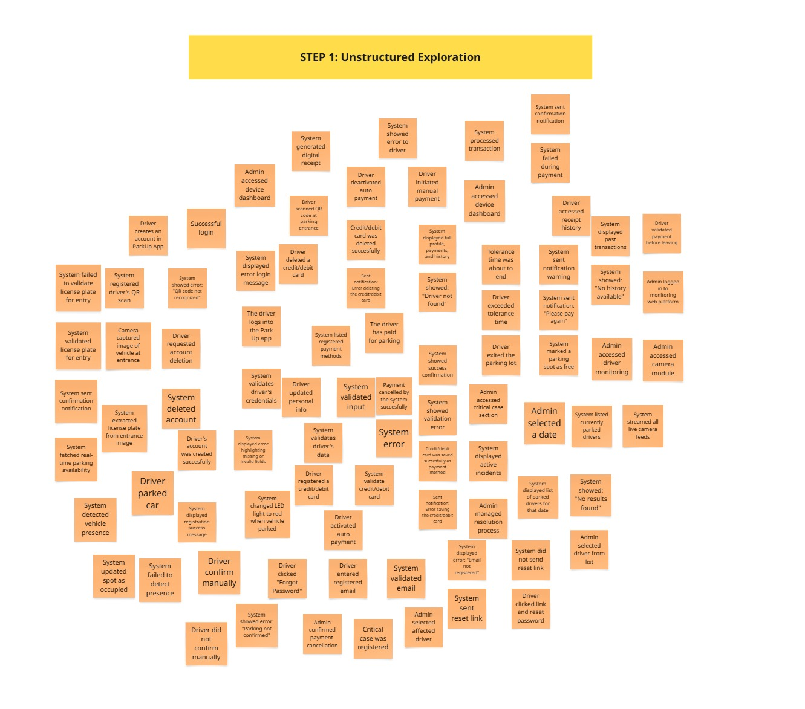
Step 2: Timelines
Durante esta fase, los eventos identificados fueron agrupados en subgrupos liderados por un evento general que encapsula la función principal del grupo. Cada subgrupo incluyó tanto los happy paths, que representan los caminos ideales o exitosos de ejecución de los eventos, como los unhappy paths, que muestran los posibles problemas o situaciones no deseadas que pudieran surgir. Esto ayudó a estructurar los eventos de manera coherente y a comprender mejor las diferentes secuencias de acciones dentro del sistema.

Step 3: Paint Points
Durante el proceso, se identificaron los pain points o puntos problemáticos. Estos puntos son cruciales para mejorar la experiencia del usuario y optimizar el diseño del sistema.
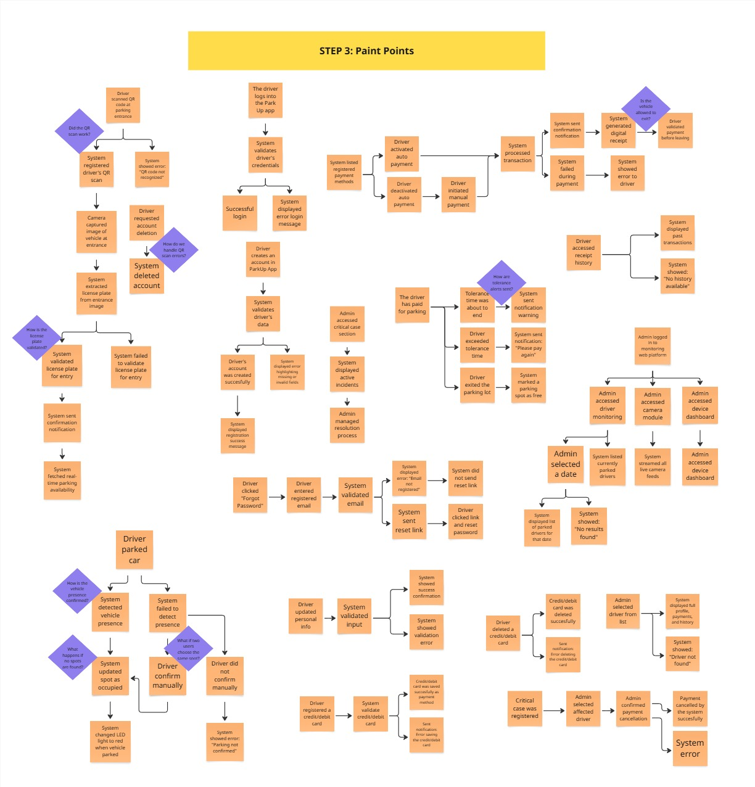
Step 4: Pivotal Points
Se señalaron los pivotal points o puntos clave, que son eventos críticos que marcan hitos importantes en el flujo de trabajo del sistema. Estos eventos suelen tener un impacto significativo en el comportamiento del sistema o en la experiencia del usuario.
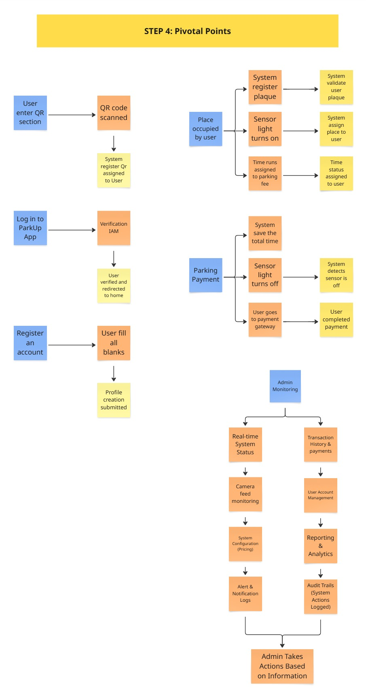
Step 5: Commands
Cada evento se asoció con un comando específico que lo desencadena y un actor que lo realiza. Esto ayudó a clarificar quién es responsable de iniciar cada acción y cómo interactúan los diferentes usuarios con el sistema.

Step 6: Policies
Durante esta etapa, se identifican los escenarios en el que un evento desencadena la ejecución de un comando

Step 7: Read Models
Durante esta fase, se diseñan y desarrollan los modelos de lectura para cada contexto del sistema, asegurando que proporcionen la información necesaria de manera eficiente y coherente
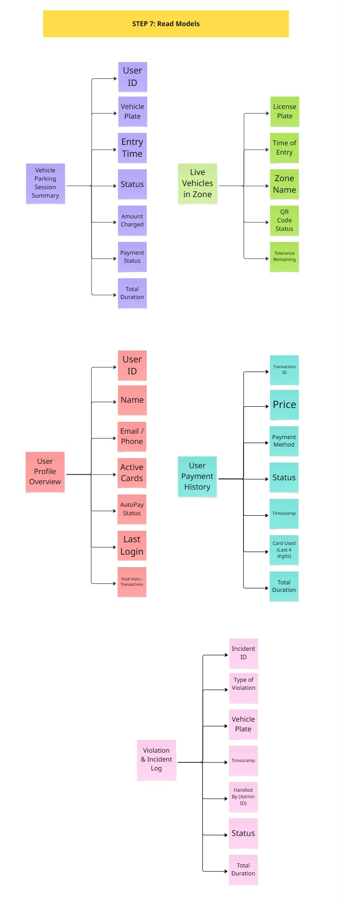
Step 8: External Systems
Durante esta etapa, se identifican los sistemas externos relevantes

Step 9: Aggregates
Durante esta etapa, se definen y diseñan los agregados para cada contexto del sistema, asegurando que representen correctamente las transacciones y operaciones coherentes dentro del sistema.

En esta sección, a partir del dominio modelado como EventStorming, se explica y evidencia el proceso realizado para la sesión de Candidate Context Discovery, en la que se busca identificar los bounded contexts. En este proyecto se aplicó la técnica Start-with-Simple. Se descompuso el modelo en procesos secuenciales y se enfoca en la simplicidad a medida que se identifiquen más necesidades.
Al final, obtuvimos ocho bounded context, que son:


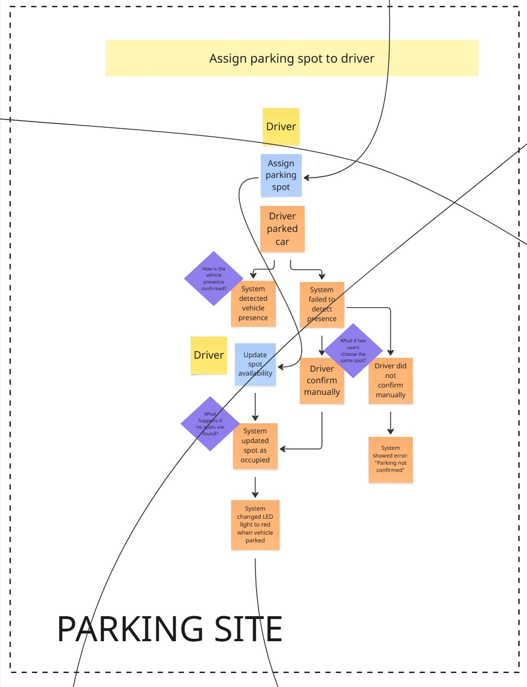


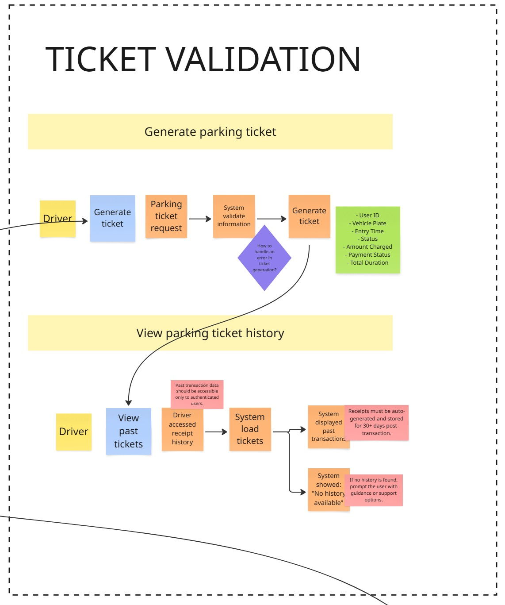

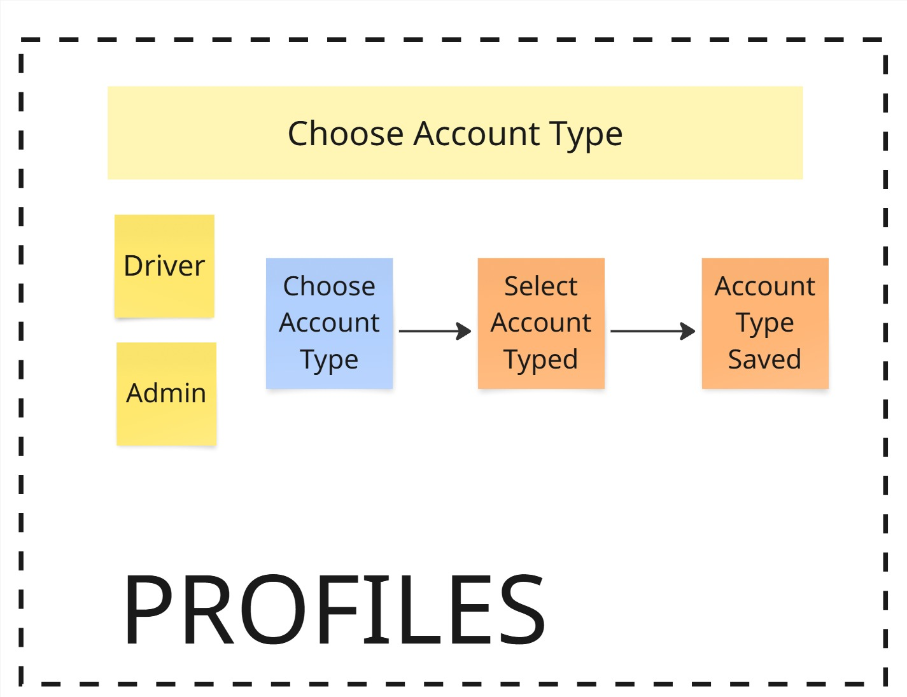
Lo que queda de la siguiente manera:

El Domain Message Flow Modeling es una técnica utilizada en Domain-Driven Design (DDD) para visualizar y documentar cómo los mensajes, eventos y comandos fluyen entre los bounded contexts y los actores dentro de un sistema. Ayuda a identificar las interacciones clave entre los componentes del sistema y cómo los eventos desencadenan acciones en diferentes partes del dominio.
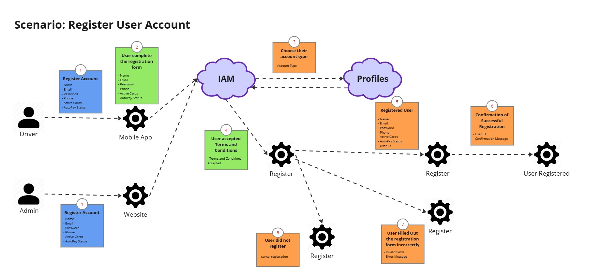
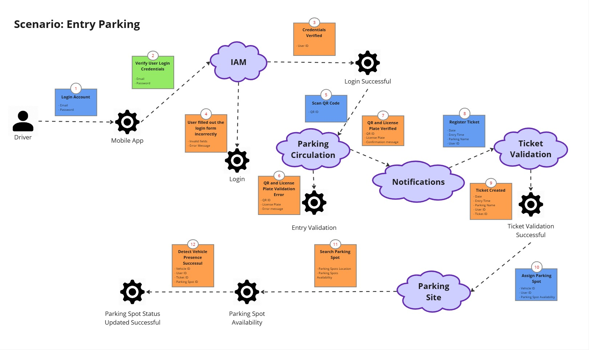


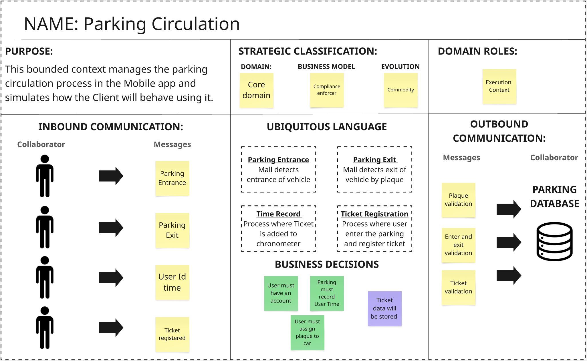
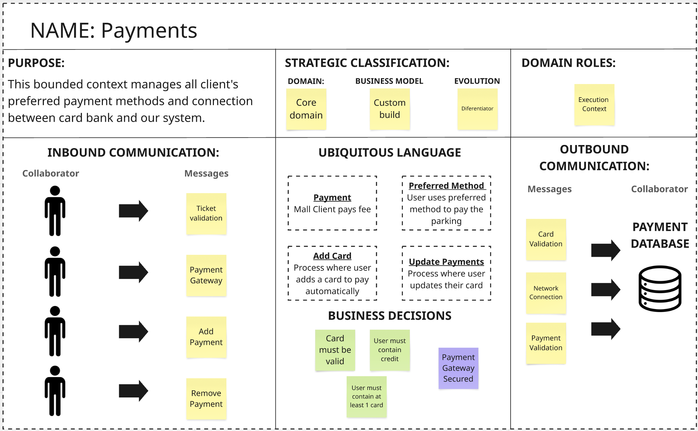
Context Mapping es una técnica de Domain-Driven Design (DDD) que define las relaciones entre los bounded contexts en un sistema, estableciendo cómo interactúan e intercambian información. Permite gestionar dependencias y asegura que los modelos de dominio se mantengan consistentes y aislados.
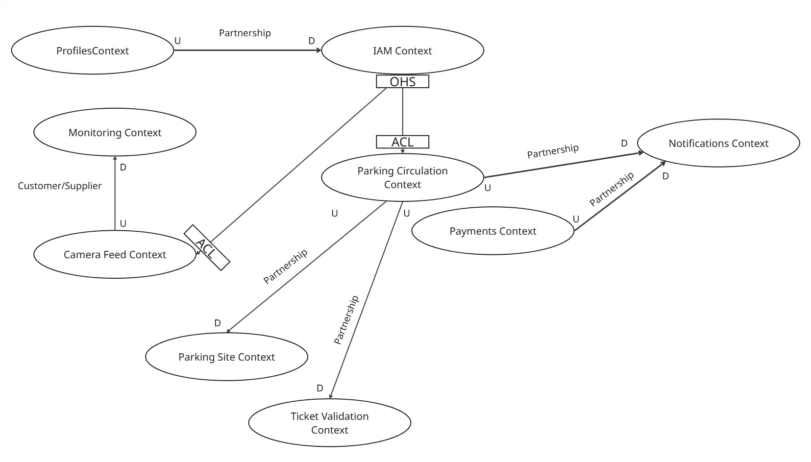
ParkUp es una solución integral de estacionamiento inteligente basada en IoT, diseñada para ofrecer una experiencia fluida y automatizada en la entrada, salida y pago en parkings conectados. Esta plataforma busca eliminar fricciones comunes en el proceso de aparcamiento, integrando tecnología de sensores, validación digital y pagos electrónicos en una única infraestructura coherente y escalable.
La arquitectura de software de ParkUp está compuesta por múltiples capas y módulos que interactúan para brindar funcionalidad en tiempo real a diferentes actores: conductores, administradores de parking, autoridades de tráfico y sistemas externos. Su diseño sigue principios de modularidad, interoperabilidad y resiliencia, permitiendo:
A nivel técnico, el sistema está conformado por:
La arquitectura de ParkUp busca garantizar eficiencia operativa, escalabilidad urbana y una experiencia optimizada para todos los usuarios involucrados.

Este diagrama muestra el ecosistema completo en el que opera ParkUp IoT System:

| Actor / Sistema | Interacción principal |
|---|---|
| Conductor | Usa ParkUp Mobile App para reservar, pagar y abrir la barrera. |
| Administrador de Parking | Usa ParkUp Web App SPA para vigilar sensores, cámaras y alertas. |
| Pasarela de Pagos | Recibe solicitudes de cobro desde ParkUp API y confirma transacciones. |
| Sensores y Dispositivos IoT | Reportan ocupación y vídeo al IoT Gateway y reciben comandos. |
| Sistemas de Analítica Externa | Consumirán datos agregados publicados por ParkUp API. |
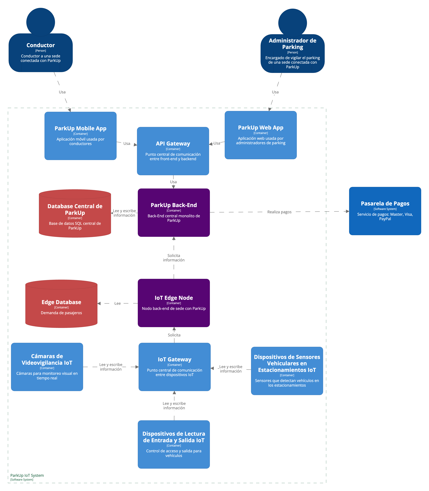
| Contenedor | Tecnología | Responsabilidad |
|---|---|---|
| ParkUp Mobile App | Flutter (Android/iOS) | Interfaz del conductor: reserva, pago, estado de plazas. |
| ParkUp Web App SPA | Angular | Panel para administradores y staff; alertas en tiempo real. |
| ParkUp API | Spring Boot (REST + WS) | Lógica central: tickets, pagos, sincronización IoT. |
| Base de Datos Central | PostgreSQL | Usuarios, reservas, pagos, eventos históricos. |
| IoT Edge App | Docker (Go/Node) | Procesamiento local y caché offline por sede. |
| Edge Database | TimescaleDB | Buffer de eventos y métricas locales. |
| IoT Gateway | Raspberry Pi | Puente entre dispositivos y red ParkUp. |
| Sensores Vehiculares | Ultrasonic / IR | Detectan presencia de vehículos. |
| Lectores Entrada Salida | PLC / Modbus | Operan barreras y tickets. |
| Cámaras Videovigilancia | IP Cams, RTSP | Streams de vídeo para seguridad. |
| Pasarela de Pagos | REST API externa | Procesamiento de tarjetas y billeteras digitales. |
| API Gateway | AWS | Puente entre dispositivos de usuarios y red ParkUp. |
Software Deployment Diagram:


| Zona física / Lógica | Nodo de despliegue | Tecnología / Specs | Contenedores o servicios clave | Principales protocolos |
|---|---|---|---|---|
| Dispositivo del Conductor | Smartphone del conductor | iOS / Android | ParkUp Mobile App | REST, WebSocket |
| PC del Administrador | Equipo de escritorio / laptop | Windows / macOS | Navegador web → ParkUp Web App SPA (cargada como estático) | HTTPS |
| Nube ParkUp | Servidor Front-End | Nginx en Docker | Static Assets (bundle SPA) | HTTPS |
| Servidor Back-End | Java 17 + Spring Boot | ParkUp API (REST + WS) | HTTPS, WebSocket | |
| Base de datos central | PostgreSQL 15 | Base de Datos Central | JDBC | |
| Sede de Parking | Gateway IoT | Raspberry Pi / Linux | IoT Gateway (Go) | MQTT, HTTP, Modbus |
| Edge Node | Industrial PC / Linux | IoT Edge App (Docker), Edge Database (TimescaleDB) | HTTP Sync, JDBC | |
| Clúster de dispositivos | Sensores, lectores, cámaras IP | Sensores Vehiculares, Lectores Entrada/Salida, Cámaras | GPIO/I²C, RS-485, RTSP | |
| Servicios Externos | Pasarela de Pagos | API cloud de terceros | Payment Gateway | HTTPS/JSON |
Conductor ↔ IoT Gateway
La app móvil envía peticiones REST/WebSocket al IoT Gateway para conocer disponibilidad y abrir barreras.
SPA ↔ ParkUp API
El panel de administración realiza llamadas REST/WebSocket al ParkUp API para telemetría y gestión de alertas.
ParkUp API ↔ Base de Datos Central
Persistencia de usuarios, reservas, pagos y eventos IoT mediante JDBC.
ParkUp API ↔ Pasarela de Pagos
Solicitudes HTTPS/JSON para autorización, captura y reversas de transacciones.
IoT Gateway ↔ Edge App
Publica telemetría vía MQTT/HTTP; el Edge App almacena en Edge Database y sincroniza con la nube.
IoT Gateway ↔ Dispositivos
Software Components Diagram:
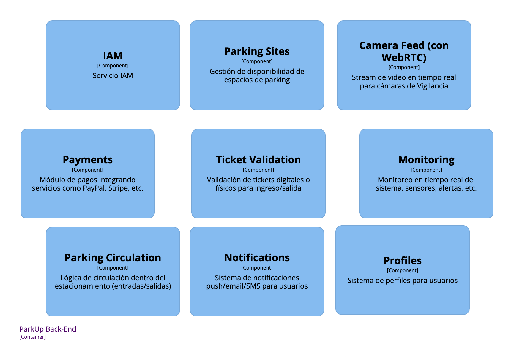
| Componente | Propósito clave |
|---|---|
| Auth Service | Gestión de usuarios, OIDC, JWT, MFA. |
| Reservation Service | Disponibilidad de plazas y cálculo de tarifas. |
| Ticket Validation | Verifica QR y códigos de barras. |
| Payment Service | Integra Stripe, PayPal, Yape; maneja reversas y conciliación. |
| Device Command Service | Envía órdenes a IoT Gateway (abrir barrera, reset sensor). |
| Sync Service | Replica eventos entre Edge Database y Base de Datos Central. |
| Monitoring Service | Métricas Prometheus, health-checks, reglas de alerta. |
| Notification Service | Push FCM, emails SendGrid, SMS Twilio a conductores y administradores. |
| Profiles Service | Información personal del usuario que no sea para autenticarse. |
En esta sección se documentan las principales clases que conforman el núcleo del contexto IAM, detallando sus atributos, métodos y relaciones. El agregado raíz User representa a cada usuario registrado en la plataforma, con credenciales de acceso (username, password) y la asignación de un único Role, lo cual refleja las reglas de negocio que restringen a un solo rol por usuario.
La entidad Role modela los diferentes tipos de rol que puede asumir un usuario dentro del sistema, tales como administrador, usuario regular o instructor. Esta entidad incluye utilidades para la validación y conversión de roles a partir de representaciones textuales. Por su parte, el objeto de valor Roles encapsula los valores constantes de los posibles roles, implementado como un enumerado (enum), asegurando la integridad de los roles permitidos y evitando inconsistencias.
Cada clase y objeto de valor está diseñado con principios de encapsulamiento, visibilidad controlada y responsabilidad única, en conformidad con los estándares de modelado de software orientado a objetos y Domain-Driven Design.
Clase User
| Nombre | User |
|---|---|
| Relaciones | Muchos a uno con Role |
| Descripción | Representa un usuario del sistema con credenciales y un rol. |
Atributos
| Nombre | Tipo de Dato | Visibilidad |
|---|---|---|
| id | Long | private |
| username | String | private |
| password | String | private |
| role | Role | private |
Métodos
| Método |
|---|
| setRole(role: Role) |
| getRole(): Role |
Clase Role
| Nombre | Role |
|---|---|
| Relaciones | Uno a muchos con User |
| Descripción | Representa un rol del sistema, como ADMIN o DRIVER. |
Atributos
| Nombre | Tipo de Dato | Visibilidad |
|---|---|---|
| id | Long | private |
| name | Roles (enum) | private |
Métodos
| Método |
|---|
| getStringName(): String |
| getDefaultRole(): Role |
| toRoleFromName(name: String): Role |
En la capa de dominio se modelan los conceptos centrales del contexto IAM siguiendo los principios de Domain-Driven Design. El agregado raíz User representa a un usuario dentro del sistema, asociado a un único Role. Esta relación permite garantizar que cada usuario tenga exactamente un rol, como ROLE_ADMIN, ROLE_USER o ROLE_INSTRUCTOR. El objeto de valor Roles, modelado como un enum, establece un conjunto cerrado de posibles valores para la asignación de roles, garantizando la integridad del dominio. Adicionalmente, los servicios de dominio UserCommandService y RoleCommandService encapsulan operaciones de negocio que no pertenecen naturalmente a ninguna entidad, cumpliendo con el principio de separación de responsabilidades. Esta estructura permite mantener un dominio rico, expresivo y alineado con las reglas de negocio fundamentales del sistema.
Agregates
| Aggregate < |
|---|
| - Long id (heredado de AuditableAbstractAggregateRoot) |
| - String username |
| - String password |
| - Role role |
| ------------------------------------------- |
| + getUsername(): String |
| + getPassword(): String |
| + getRole(): Role |
| + setRole(role: Role): User |
Entities
| Entity < |
|---|
| - Long id |
| - Roles name |
| ------------------------------------------ |
| + getId(): Long |
| + getName(): Roles |
| + getStringName(): String |
| + getDefaultRole(): Role |
| + toRoleFromName(name: String): Role |
| + validateRoleSet(roles: List |
Value Objects
| Value Object < |
|---|
| + ROLE_ADMIN |
| + ROLE_USER |
| + ROLE_INSTRUCTOR |
| ----------------------------------------- |
| (Métodos estándar de enum Java) |
| + name(): String |
| + values(): Roles[] |
| + valueOf(String): Roles |
Domain Services
| RoleCommandService |
|---|
| + handle(command: SeedRolesCommand): void |
| UserCommandService |
|---|
| + handle(command: SignUpCommand): Optional |
| + handle(command: SignInCommand): Optional<ImmutablePair<User, String>> |
La capa de interfaz expone la funcionalidad del contexto IAM a través de controladores RESTful basados en el framework Spring Boot. AuthenticationController gestiona los procesos de autenticación de usuarios, permitiendo tanto el inicio de sesión como el registro de nuevos usuarios. RolesController proporciona endpoints para consultar los diferentes roles disponibles en el sistema, mientras que UsersController facilita la recuperación de información sobre los usuarios registrados. Cada controlador delega la lógica de negocio en los servicios de dominio apropiados, actuando únicamente como capa de orquestación, en conformidad con el principio de Controller Thin.
| Controller < |
|---|
| - UserCommandService userCommandService |
| ------------------------------------------------------------------- |
| + signIn(signInResource: SignInResource): ResponseEntity |
| + signUp(signUpResource: SignUpResource): ResponseEntity |
| Controller < |
|---|
| - RoleQueryService roleQueryService |
| ---------------------------------------------------- |
| + getAllRoles(): ResponseEntity<List |
| Controller < |
|---|
| - UserQueryService userQueryService |
| ---------------------------------------------------------------- |
| + getAllUsers(): ResponseEntity<List |
| + getUserById(userId: Long): ResponseEntity |
La capa de aplicación coordina la ejecución de las operaciones de negocio a través de componentes como event handlers y servicios de aplicación. El ApplicationReadyEventHandler es responsable de inicializar los roles del sistema cuando la aplicación arranca. Este componente escucha el evento ApplicationReadyEvent de Spring y dispara la ejecución del comando SeedRolesCommand, garantizando que los roles fundamentales estén disponibles sin intervención manual. Esta organización contribuye a desacoplar las operaciones de infraestructura del dominio y favorece la automatización de procesos iniciales del sistema.
| Event Handler < |
|---|
| - Logger LOGGER |
| - RoleCommandService roleCommandService |
| ---------------------------------------------------------- |
| + on(event: ApplicationReadyEvent): void |
| - getCurrentTimestamp(): Timestamp |
La capa de infraestructura implementa los mecanismos de persistencia requeridos para soportar el dominio. UserRepository y RoleRepository son interfaces que extienden JpaRepository, permitiendo operaciones de acceso a datos sobre las entidades User y Role, respectivamente. Estos repositorios proporcionan métodos específicos como findByUsername, findByName y validaciones de existencia (existsByUsername, existsByName), que son esenciales para preservar la unicidad de los registros. Al delegar la persistencia en esta capa, se preserva la pureza del modelo de dominio, favoreciendo una arquitectura limpia y sostenible.
| Infrastructure Repository < |
|---|
| Extiende: JpaRepository<Role, Long> |
| ------------------------------------------------------------- |
| + findByName(name: Roles): Optional |
| + existsByName(name: Roles): boolean |
| Infrastructure Repository < |
|---|
| Extiende: JpaRepository<User, Long> |
| ------------------------------------------------------------- |
| + findByUsername(username: String): Optional |
| + existsByUsername(username: String): boolean |
En esta sección se presentan los diagramas de arquitectura a nivel de componentes para el contexto IAM. Estos diagramas ilustran la interacción entre los principales artefactos del sistema, como controladores, servicios de dominio, agregados y repositorios. La representación gráfica facilita la comprensión del flujo de información y responsabilidades entre capas, promoviendo la trazabilidad y la consistencia arquitectónica del contexto.

Los diagramas a nivel de código detallan los flujos de ejecución de los principales casos de uso del contexto IAM, incluyendo el proceso de registro (sign-up) y autenticación (sign-in). Asimismo, se incluyen diagramas de clases que representan la estructura interna de las entidades y servicios, así como diagramas de base de datos que modelan la persistencia de los objetos del dominio. Esta representación contribuye a visualizar la implementación técnica del contexto y a validar su alineación con el diseño conceptual.


Propósito general
Este contexto modela la infraestructura física de un estacionamiento (sedes, pisos, plazas).
| Agregado | Rol | Descripción breve |
|---|---|---|
Site <<Aggregate Root>> |
Macro-unidad | Un establecimiento (o nivel) con dirección, capacidad y reglas. Contiene muchas ParkingSpot. |
ParkingSpot <<Aggregate Root>> |
Micro-unidad | Una plaza individual identificada (código), de un tipo (COMPACT, EV, HANDICAP…) y con un state (FREE, OCCUPIED, OUT_OF_SERVICE). |
| Atributo | Tipo | Vis. | Notas |
|---|---|---|---|
| id | Long | private | PK |
| name | String | private | Nombre visible (“San Isidro – Sotano 1”) |
| address | String | private | Dirección completa |
| totalCapacity | Integer | private | Plazas totales |
| availableSpots | Integer | private | Plazas libres (cálculo interno) |
| Método | Firma |
|---|---|
| addSpot(spot: ParkingSpot) | |
| removeSpot(spotId: Long) | |
| updateAvailability(): Site |
| Atributo | Tipo | Vis. | Notas |
|---|---|---|---|
| id | Long | private | PK |
| code | String | private | Ej. “B-12” |
| type | SpotType enum |
private | COMPACT, LARGE, EV, HANDICAP |
| state | SpotState enum |
private | FREE, OCCUPIED, RESERVED, OUT_OF_SERVICE |
| siteId | Long | private | FK a Site |
| Método | Firma |
|---|---|
| occupy(): ParkingSpot | |
| release(): ParkingSpot | |
| markOutOfService(): ParkingSpot |
| Nombre | Valores |
|---|---|
| SpotType | COMPACT · LARGE · EV · HANDICAP |
| SpotState | FREE · OCCUPIED · RESERVED · OUT_OF_SERVICE |
| Servicio | Responsabilidad principal |
|---|---|
| SpotAssignmentService | Encontrar la siguiente plaza libre según tipo preferido y reglas de negocio (por ejemplo, prioridad EV). |
| Controller | Endpoints clave |
|---|---|
| SitesController | GET /sites, GET /sites/{id}, POST /sites |
| SpotsController | GET /spots/{id}, PATCH /spots/{id}/occupy, PATCH /spots/{id}/release |
| Service Interface | Operaciones |
|---|---|
| ISiteService | createSite · getSite · listSites |
| ISpotService | occupySpot · releaseSpot · findNextFreeSpot |
Implementaciones: SiteServiceImpl, SpotServiceImpl (usan ModelMapper + reglas de dominio).
| Repository | Extiende | Métodos custom |
|---|---|---|
| SiteRepository | JpaRepository<Site,Long> |
findByName |
| SpotRepository | JpaRepository<ParkingSpot,Long> |
countByStateAndSiteId |
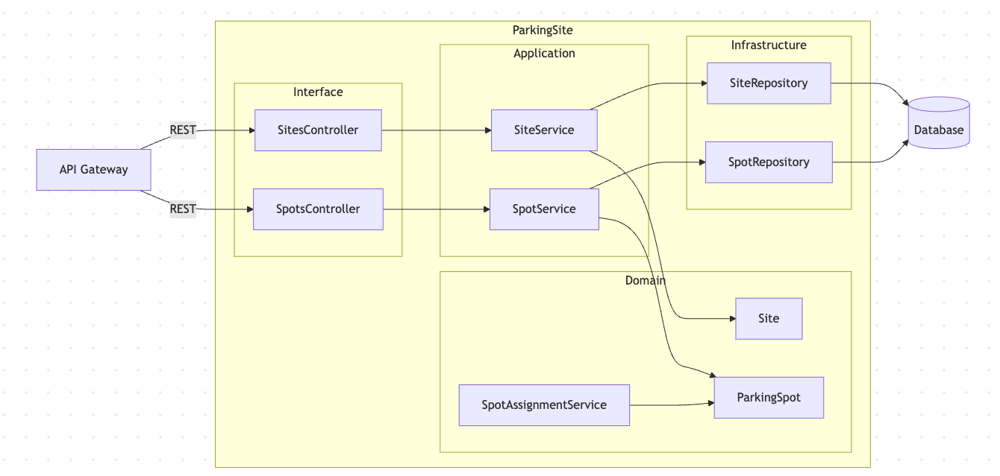

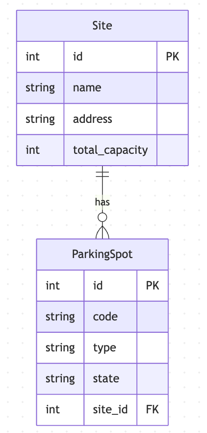
Este contexto está orientado a la gestión de dispositivos de cámaras, sus transmisiones (feeds) en vivo, capturas de pantalla (screenshots) y la relación de estas capturas con matrículas de automóviles (carplates).
| Nombre | CameraDevice |
|---|---|
| Relaciones | Tiene muchos Feed y muchos Screenshot. |
| Descripción | Representa un dispositivo de cámara que envía transmisiones y toma capturas de pantalla. Es el agregado raíz de este contexto. |
| Nombre | Tipo de Dato | Visibilidad |
|---|---|---|
id |
Long |
private |
deviceName |
String |
private |
location |
String |
private |
feeds |
List<Feed> |
private |
screenshots |
List<Screenshot> |
private |
| Método | Descripción |
|---|---|
addFeed(feed: Feed) |
Agrega un nuevo feed al dispositivo. |
addScreenshot(screenshot: Screenshot) |
Agrega una nueva captura de pantalla. |
| Nombre | Feed |
|---|---|
| Relaciones | Pertenece a CameraDevice. |
| Descripción | Representa una transmisión de video proveniente de un dispositivo de cámara. |
| Nombre | Tipo de Dato | Visibilidad |
|---|---|---|
id |
Long |
private |
streamUrl |
String |
private |
startedAt |
LocalDateTime |
private |
| Método | Descripción |
|---|---|
getStreamUrl() |
Devuelve la URL del stream. |
getStartedAt() |
Devuelve la fecha y hora de inicio del feed. |
| Nombre | Screenshot |
|---|---|
| Relaciones | Pertenece a CameraDevice y puede estar asociada a un CarPlate. |
| Descripción | Representa una captura de imagen tomada de un feed en vivo. |
| Nombre | Tipo de Dato | Visibilidad |
|---|---|---|
id |
Long |
private |
imageUrl |
String |
private |
takenAt |
LocalDateTime |
private |
carPlate |
CarPlate |
private |
| Método | Descripción |
|---|---|
assignCarPlate(carPlate: CarPlate) |
Asigna una matrícula detectada a la captura. |
| Nombre | CarPlate |
|---|---|
| Relaciones | Puede ser asociada a varios Screenshot. |
| Descripción | Representa la matrícula de un vehículo detectado en una captura. |
| Nombre | Tipo de Dato | Visibilidad |
|---|---|---|
id |
Long |
private |
plateNumber |
String |
private |
detectedAt |
LocalDateTime |
private |
| Método | Descripción |
|---|---|
getPlateNumber() |
Devuelve el número de la matrícula detectada. |
getDetectedAt() |
Devuelve la fecha y hora de detección. |
Esta capa representa el núcleo del modelo de negocio dentro del bounded context Camera Feed. Aquí se definen los principales conceptos del dominio, sus entidades, agregados y relaciones.
El aggregate root CameraDevice organiza la estructura general: cada dispositivo de cámara puede emitir múltiples transmisiones en vivo (Feed) y generar múltiples capturas de pantalla (Screenshot). Además, las capturas de pantalla pueden contener información relevante de matrículas de vehículos (CarPlate).
Todas las reglas de negocio críticas y las asociaciones entre estos objetos del dominio se gestionan en esta capa, asegurando coherencia y consistencia en el modelo de datos.
| Entidad / Agregado | Descripción |
|---|---|
CameraDevice <<Aggregate Root>> |
Representa un dispositivo de cámara. Contiene múltiples feeds y screenshots. |
Feed <<Entity>> |
Representa una transmisión en vivo generada por una cámara. |
Screenshot <<Entity>> |
Imagen capturada desde un feed en un momento específico. Puede estar relacionada a una matrícula de vehículo. |
CarPlate <<Entity>> |
Información de una placa de vehículo detectada en un screenshot. |
| Atributo | Tipo |
|---|---|
| id | Long |
| name | String |
| location | String |
| feeds | List |
| screenshots | List |
| Método | Firma |
|---|---|
| addFeed(feed: Feed): void | |
| captureScreenshot(screenshot: Screenshot): void |
| Atributo | Tipo |
|---|---|
| id | Long |
| cameraDeviceId | Long |
| urlStream | String |
| startedAt | Instant |
| endedAt | Instant (nullable) |
| Atributo | Tipo |
|---|---|
| id | Long |
| cameraDeviceId | Long |
| feedId | Long (opcional) |
| capturedAt | Instant |
| imageUrl | String |
| carPlate | CarPlate (opcional) |
| Atributo | Tipo |
|---|---|
| id | Long |
| plateNumber | String |
| detectedAt | Instant |
La capa de interfaz expone los servicios de CameraDevice, permitiendo registrar dispositivos, crear feeds y capturar screenshots, todo a través de APIs RESTful.
| Controller | Endpoints |
|---|---|
| CameraDeviceController | POST /camera-devices · GET /camera-devices/{id} |
| FeedController | POST /feeds · GET /feeds/{id} |
| ScreenshotController | POST /screenshots · GET /screenshots/{id} |
El CameraDeviceCommandService maneja las operaciones de negocio como agregar feeds, registrar nuevos dispositivos y asociar screenshots a car plates.
| Service | Operaciones |
|---|---|
| ICameraFeedService | registerCameraDevice · startFeed · captureScreenshot · associateCarPlate |
Impl.: CameraFeedServiceImpl
CameraDeviceRepository es una interfaz que extiende JpaRepository, permitiendo el acceso y persistencia de dispositivos de cámara, junto con sus feeds y screenshots asociados.
| Repository | Métodos custom |
|---|---|
| CameraDeviceRepository | findByLocation |
| FeedRepository | findActiveFeedsByCameraDeviceId |
| ScreenshotRepository | findByCapturedAtBetween |
| CarPlateRepository | findByPlateNumber |

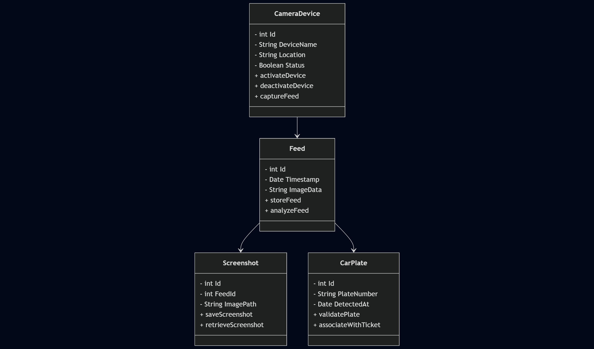
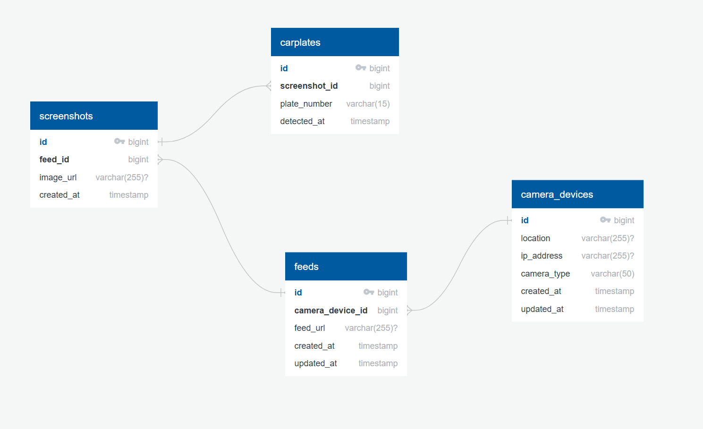
Propósito
Modela eventos de flujo: ingreso, salida y emisión de tickets en tiempo real,
orquestando la relación con Camera Feed y Payments.
| Entidad / Agregado | Descripción |
|---|---|
| ParkingEntrance | Evento de llegada (timestamp, plate, detectedBy). |
| ParkingExit | Evento de salida. |
Ticket <<Entity>> |
Correlaciona entrada + salida, lleva userId (VO), status, amountToPay, totalDuration. |
UserId <<Value Object>> |
Cadena inmutable (“sub-dominio IAM”). |
| Atributo | Tipo |
|---|---|
| id | Long |
| userId | UserId |
| entranceId | Long |
| exitId | Long (nullable hasta salida) |
| status | TicketState enum |
| amountToPay | BigDecimal |
| totalDuration | Duration |
| Método | Firma |
|---|---|
| close(exit: ParkingExit): Ticket | |
| calculateAmount(rate: MoneyRate): BigDecimal |
TicketState → OPEN · CLOSED · CANCELLED
CirculationDomainService
– vincula entrada, genera Ticket; al recibir salida, cierra + publica ParkingCompletedEvent.
| Controller | Endpoints |
|---|---|
| EntranceController | POST /circulation/entrance |
| ExitController | POST /circulation/exit |
| TicketsController | GET /tickets/{id} · GET /tickets?userId= |
| Service | Operaciones |
|---|---|
| ICirculationService | registerEntrance · registerExit · getTicket · getActiveTickets |
Impl.: CirculationServiceImpl (publica dominio events a Payments & Notifications).
| Repository | Métodos custom |
|---|---|
| EntranceRepository | findByVehiclePlateAndDate |
| ExitRepository | — |
| TicketRepository | findByUserId · findOpenByPlate |
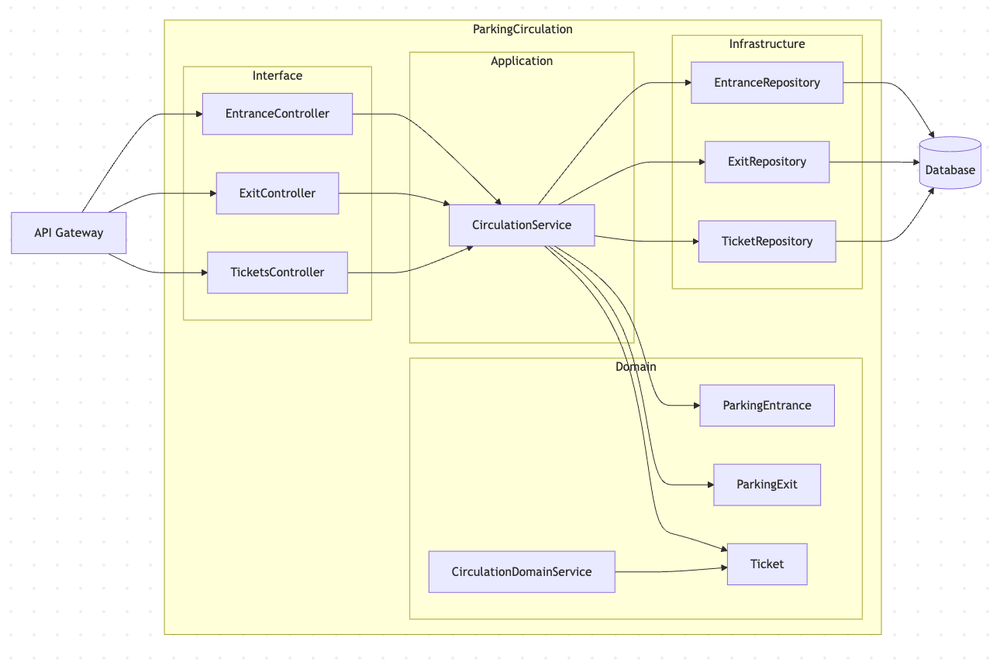


Esta capa modela los conceptos principales del contexto de pagos. El agregado raíz Payment representa un pago realizado en el sistema. El objeto de valor PaymentStatus, modelado como un enum, define los posibles estados de un pago.
| Nombre | PaymentCard |
|---|---|
| Relaciones | Muchos a uno con UserId. Puede tener varios Payment asociados. |
| Descripción | Representa una tarjeta de pago asociada a un usuario para realizar transacciones. |
| Nombre | Tipo de Dato | Visibilidad |
|---|---|---|
| id | Long | private |
| userId | UserId | private |
| cardNumber | String | private |
| cardHolderName | String | private |
| expirationDate | String | private |
| cardType | CardType (enum) | private |
| Método | Descripción |
|---|---|
| maskCardNumber(): String | Devuelve el número de tarjeta enmascarado. |
| isExpired(): boolean | Verifica si la tarjeta está vencida. |
| Nombre | Receipt |
|---|---|
| Relaciones | Uno a uno con Payment. |
| Descripción | Representa el comprobante generado para un pago exitoso. |
| Nombre | Tipo de Dato | Visibilidad |
|---|---|---|
| id | Long | private |
| paymentId | Long | private |
| issuedDate | LocalDateTime | private |
| receiptUrl | String | private |
| Método | Descripción |
|---|---|
| generateReceiptUrl(): String | Genera una URL para acceder al comprobante. |
| Nombre | UserId |
|---|---|
| Relaciones | Es utilizado por Payment y PaymentCard para identificar al usuario. |
| Descripción | Value Object que encapsula el identificador único del usuario. |
| Nombre | Tipo de Dato | Visibilidad |
|---|---|---|
| id | Long | private |
| Método | Descripción |
|---|---|
| getId(): Long | Retorna el valor del ID del usuario. |
| Nombre | PaymentStatus |
|---|---|
| Relaciones | No tiene relaciones, es un enum. |
| Descripción | Enumera los estados posibles de un pago. |
| Valor |
|---|
| PENDING |
| COMPLETED |
| FAILED |
| Nombre | CardType |
|---|---|
| Relaciones | No tiene relaciones, es un enum. |
| Descripción | Enumera los tipos de tarjetas disponibles. |
| Valor |
|---|
| VISA |
| MASTERCARD |
| AMEX |
| OTHER |
| Nombre | PaymentStatus |
|---|---|
| Relaciones | No tiene relaciones, es un enum. |
| Descripción | Enumera los posibles estados de un pago. |
| Valor |
|---|
| PENDING |
| COMPLETED |
| FAILED |
| Método | Descripción |
|---|---|
| name(): String | Devuelve el nombre del estado. |
| values(): PaymentStatus[] | Devuelve todos los valores posibles del enum. |
| valueOf(name: String): PaymentStatus | Devuelve el estado correspondiente al nombre dado. |
| Attribute | Data Type | Description |
|---|---|---|
id |
Long |
Unique identifier for the payment. |
amount |
BigDecimal |
Amount of the payment. |
paymentStatus |
PaymentStatus |
Status of the payment (e.g., PENDING, COMPLETED). |
| Method | Description |
|---|---|
getAmount() |
Returns the amount of the payment. |
getPaymentStatus() |
Returns the payment status. |
setPaymentStatus(status: PaymentStatus) |
Sets the payment status. |
| Attribute | Data Type | Description |
|---|---|---|
id |
Long |
Unique identifier for the payment card. |
userId |
UserId |
Identifier for the associated user. |
cardNumber |
String |
Payment card number. |
cardHolderName |
String |
Name of the cardholder. |
expirationDate |
String |
Expiration date of the payment card. |
cardType |
CardType |
Type of the card (enum). |
| Method | Description |
|---|---|
maskCardNumber() |
Returns the masked payment card number. |
isExpired() |
Checks if the payment card is expired. |
| Attribute | Data Type | Description |
|---|---|---|
id |
Long |
Unique identifier for the receipt. |
paymentId |
Long |
Payment associated with the receipt. |
issuedDate |
LocalDateTime |
Date and time when the receipt was issued. |
receiptUrl |
String |
URL to access the receipt. |
| Method | Description |
|---|---|
generateReceiptUrl() |
Generates a URL to access the receipt. |
| Attribute | Data Type | Description |
|---|---|---|
id |
Long |
Unique identifier for the user. |
| Method | Description |
|---|---|
getId() |
Returns the user ID value. |
| Value |
|---|
PENDING |
COMPLETED |
FAILED |
| Method | Description |
|---|---|
name() |
Returns the name of the payment status. |
values() |
Returns all possible values of the enum. |
valueOf(String) |
Returns the status corresponding to the given name. |
| Value |
|---|
VISA |
MASTERCARD |
AMEX |
OTHER |
| Method | Description |
|---|---|
name() |
Returns the name of the card type. |
values() |
Returns all possible values of the enum. |
valueOf(String) |
Returns the card type corresponding to the given name. |
| Method | Description |
|---|---|
handle(command: SeedRolesCommand) |
Handles the command to seed roles in the system. |
| Method | Description |
|---|---|
handle(command: SignUpCommand) |
Handles the command to sign up a new user. |
handle(command: SignInCommand) |
Handles the command to sign in a user. |
La capa de interfaz expone la funcionalidad del contexto Payments a través de controladores RESTful basados en el framework Spring Boot. PaymentController gestiona los procesos relacionados con los pagos, permitiendo tanto la creación de pagos como la consulta de su estado. ReceiptController facilita la generación y consulta de recibos asociados a los pagos. Cada controlador delega la lógica de negocio en los servicios de dominio apropiados, actuando únicamente como capa de orquestación, en conformidad con el principio de Controller Thin.
| Controller PaymentController |
|---|
| - PaymentCommandService paymentCommandService |
| ---------------------------------------------------------- |
| + processPayment(paymentResource: PaymentResource): ResponseEntity |
| + getPaymentStatus(paymentId: Long): ResponseEntity |
| Controller ReceiptController |
|---|
| - ReceiptQueryService receiptQueryService |
| -------------------------------------------------------- |
| + getReceiptByPaymentId(paymentId: Long): ResponseEntity |
| + generateReceipt(paymentId: Long): ResponseEntity |
El PaymentProcessingEventHandler es responsable de procesar los pagos cuando se recibe un evento de pago. Este componente escucha el evento PaymentProcessedEvent y desencadena la ejecución de los servicios correspondientes para completar el pago. Esta organización permite separar las responsabilidades del dominio, favoreciendo una arquitectura desacoplada y limpia.
| Event Handler PaymentProcessingEventHandler |
|---|
| - Logger LOGGER |
| - PaymentCommandService paymentCommandService |
| ---------------------------------------------------------- |
| + on(event: PaymentProcessedEvent): void |
| - getCurrentTimestamp(): Timestamp |
PaymentRepository y ReceiptRepository son interfaces que extienden JpaRepository, permitiendo operaciones de acceso a datos sobre las entidades Payment y Receipt, respectivamente. Estos repositorios proporcionan métodos específicos como findByPaymentId, findByReceiptId y validaciones de existencia (existsByPaymentId, existsByReceiptId), que son esenciales para preservar la unicidad de los registros. Al delegar la persistencia en esta capa, se preserva la pureza del modelo de dominio, favoreciendo una arquitectura limpia y sostenible.
| Infrastructure Repository PaymentRepository |
|---|
| Extiende: JpaRepository<Payment, Long> |
| ------------------------------------------------------------- |
| + findByPaymentId(paymentId: Long): Optional |
| + existsByPaymentId(paymentId: Long): boolean |
| Infrastructure Repository ReceiptRepository |
|---|
| Extiende: JpaRepository<Receipt, Long> |
| ------------------------------------------------------------- |
| + findByReceiptId(receiptId: Long): Optional |
| + existsByReceiptId(receiptId: Long): boolean |
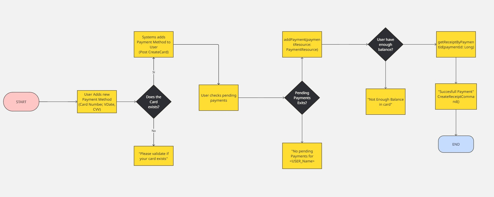
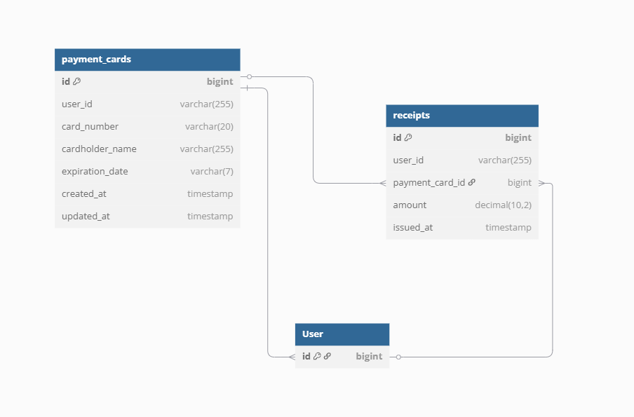
| Nombre | Categoría | Propósito |
|---|---|---|
| CriticalEventLog | Entity | Registro de un caso que lleve a la cancelación del pago |
| Nombre | Tipo de dato | Visibilidad | Descripción |
|---|---|---|---|
| id | Long | Private | Identificador único para el caso |
| typeOfViolation | string | Private | Tipo de caso crítico registrado |
| vehiclePlate | string | Private | Placa del vehículo involucrado en el caso |
| timestamp | Time | Private | Hora de la ocurrencia |
| handledBy | Long | Private | ID del administrador que trató el caso |
| status | string | Private | Estado actual del caso |
| totalDuration | string | Private | Duración total del caso |
| Nombre | Categoría | Propósito |
|---|---|---|
| CriticalEventLogController | Controller | Endpoints para la gestión de casos críticos |
| Nombre | Tipo de retorno | Visibilidad | Descripción |
|---|---|---|---|
| Constructor | void | Public | Constructor del controlador |
| createCriticalEventLog | ResponseEntity<CriticalEventLogResponseDto> | Public | Crear un nuevo caso crítico |
| getCriticalEventLog | ResponseEntity<CriticalEventLogResponseDto> | Public | Obtener un caso crítico por su ID |
| getAllCriticalEventLogs | ResponseEntity<List<CriticalEventLogResponseDto>> | Public | Obtener todos los casos críticos |
| Nombre | Categoría | Propósito |
|---|---|---|
| CriticalEventLogRequestDto | DTO | Datos necesarios para crear un nuevo caso crítico |
| Nombre | Tipo de dato | Visibilidad | Descripción |
|---|---|---|---|
| typeOfViolation | string | Private | Tipo de violación que originó el caso crítico |
| vehiclePlate | string | Private | Placa del vehículo involucrado en el caso |
| timestamp | Time | Private | Fecha y hora de la ocurrencia del caso |
| handledBy | Long | Private | ID del administrador que atendió el caso |
| Nombre | Categoría | Propósito |
|---|---|---|
| CriticalEventLogResponseDto | DTO | Representación de un caso crítico con detalles completos |
| Nombre | Tipo de dato | Visibilidad | Descripción |
|---|---|---|---|
| id | Long | Private | Identificador único del caso crítico |
| typeOfViolation | string | Private | Tipo de violación que originó el caso crítico |
| vehiclePlate | string | Private | Placa del vehículo involucrado en el caso |
| timestamp | Time | Private | Fecha y hora de la ocurrencia del caso |
| handledBy | Long | Private | ID del administrador que atendió el caso |
| status | string | Private | Estado actual del caso (ej. "En proceso", "Resuelto") |
| totalDuration | string | Private | Duración total del caso en formato HH:mm:ss |
| Nombre | Categoría | Propósito |
|---|---|---|
| VehicleMonitoringController | Controller | Gestiona las operaciones relacionadas con los vehículos en el estacionamiento |
| Nombre | Tipo de dato | Visibilidad | Descripción |
|---|---|---|---|
| vehicleService | IVehicleService | Private | Servicio para operaciones con vehículos |
| Nombre | Tipo de retorno | Visibilidad | Descripción |
|---|---|---|---|
| getVehicleStatus | ResponseEntity |
Public | Obtiene el estado actual de un vehículo por su placa |
| getAllVehiclesStatus | ResponseEntity<List |
Public | Obtiene el estado de todos los vehículos |
| Nombre | Categoría | Propósito |
|---|---|---|
| DeviceMonitoringController | Controller | Gestiona las operaciones relacionadas con los dispositivos de monitoreo en el estacionamiento |
| Nombre | Tipo de dato | Visibilidad | Descripción |
|---|---|---|---|
| deviceService | IDeviceService | Private | Servicio para operaciones con dispositivos de monitoreo |
| Nombre | Tipo de retorno | Visibilidad | Descripción |
|---|---|---|---|
| getDeviceStatus | ResponseEntity |
Public | Obtiene el estado actual de un dispositivo por su ID |
| getAllDevicesStatus | ResponseEntity<List |
Public | Obtiene el estado de todos los dispositivos |
| Nombre | Categoría | Propósito |
|---|---|---|
| ICriticalEventLogService | Service | Define las operaciones para gestionar casos críticos |
| Nombre | Tipo de retorno | Descripción |
|---|---|---|
| createCriticalEventLog | CriticalEventLogResponseDto | Crea un nuevo caso crítico |
| getCriticalEventLog | CriticalEventLogResponseDto | Obtiene un caso crítico por su ID |
| getAllCriticalEventLogs | List<CriticalEventLogResponseDto> | Obtiene todos los casos críticos |
| Nombre | Categoría | Propósito |
|---|---|---|
| CriticalEventLogServiceImpl | Service | Implementa las operaciones definidas en ICriticalEventLogService |
| Nombre | Tipo de dato | Visibilidad | Descripción |
|---|---|---|---|
| criticalEventLogRepository | ICriticalEventLogRepository | Private | Repositorio para acceder a los datos de casos críticos |
| Nombre | Tipo de retorno | Visibilidad | Descripción |
|---|---|---|---|
| createCriticalEventLog | CriticalEventLogResponseDto | Public | Crea un nuevo caso crítico |
| getCriticalEventLog | CriticalEventLogResponseDto | Public | Obtiene un caso crítico por su ID |
| getAllCriticalEventLogs | List<CriticalEventLogResponseDto> | Public | Obtiene todos los casos críticos |
| Nombre | Categoría | Propósito |
|---|---|---|
| IVehicleService | Service | Define las operaciones para gestionar los vehículos en el estacionamiento |
| Nombre | Tipo de retorno | Descripción |
|---|---|---|
| getVehicleStatus | VehicleDto | Obtiene el estado actual de un vehículo por su placa |
| getAllVehiclesStatus | List |
Obtiene el estado de todos los vehículos |
| Nombre | Categoría | Propósito |
|---|---|---|
| VehicleServiceImpl | Service | Implementa las operaciones definidas en IVehicleService |
| Nombre | Tipo de dato | Visibilidad | Descripción |
|---|---|---|---|
| vehicleRepository | IVehicleRepository | Private | Repositorio para acceder a los datos de los vehículos |
| Nombre | Tipo de retorno | Visibilidad | Descripción |
|---|---|---|---|
| getVehicleStatus | VehicleDto | Public | Obtiene el estado actual de un vehículo por su placa |
| getAllVehiclesStatus | List |
Public | Obtiene el estado de todos los vehículos |
| Nombre | Categoría | Propósito |
|---|---|---|
| IDeviceService | Service | Define las operaciones para gestionar los dispositivos de monitoreo en el estacionamiento |
| Nombre | Tipo de retorno | Descripción |
|---|---|---|
| getDeviceStatus | DeviceDto | Obtiene el estado actual de un dispositivo por su ID |
| getAllDevicesStatus | List |
Obtiene el estado de todos los dispositivos |
| Nombre | Categoría | Propósito |
|---|---|---|
| DeviceServiceImpl | Service | Implementa las operaciones definidas en IDeviceService |
| Nombre | Tipo de dato | Visibilidad | Descripción |
|---|---|---|---|
| deviceRepository | IDeviceRepository | Private | Repositorio para acceder a los datos de los dispositivos |
| Nombre | Tipo de retorno | Visibilidad | Descripción |
|---|---|---|---|
| getDeviceStatus | DeviceDto | Public | Obtiene el estado actual de un dispositivo por su ID |
| getAllDevicesStatus | List |
Public | Obtiene el estado de todos los dispositivos |
| Nombre | Categoría | Propósito |
|---|---|---|
| ICriticalEventLogRepository | Repository | Define las operaciones de acceso a datos para casos críticos |
| Nombre | Tipo de retorno | Descripción |
|---|---|---|
| findById | Optional<CriticalEventLog> | Encuentra un caso crítico por su ID |
| findAll | List<CriticalEventLog> | Encuentra todos los casos críticos |
| save | CriticalEventLog | Guarda un nuevo caso crítico |
| deleteById | void | Elimina un caso crítico por su ID |
| Nombre | Categoría | Propósito |
|---|---|---|
| IVehicleRepository | Repository | Define las operaciones de acceso a datos para los vehículos |
| Nombre | Tipo de retorno | Descripción |
|---|---|---|
| findByLicensePlate | VehicleDto | Encuentra un vehículo por su placa |
| findAll | List |
Encuentra todos los vehículos |
| Nombre | Categoría | Propósito |
|---|---|---|
| IDeviceRepository | Repository | Define las operaciones de acceso a datos para los dispositivos de monitoreo |
| Nombre | Tipo de retorno | Descripción |
|---|---|---|
| findByDeviceId | DeviceDto | Encuentra un dispositivo por su ID |
| findAll | List |
Encuentra todos los dispositivos |


| Nombre | Categoría | Propósito |
|---|---|---|
| Ticket | Entity | Registro de un ticket que indica la entrada y salida de un vehiculo del estacionamiento, asi como el pago. |
| Nombre | Tipo de dato | Visibilidad | Descripción |
|---|---|---|---|
| id | Long | Private | Identificador único para el ticket |
| userId | string | Private | Id de usuario que utilizo la app para entrar al estacionamiento |
| vehiclePlate | string | Private | Placa del vehículo que ingreso al estacionamiento |
| entryTime | Time | Private | Hora de entrada del vehiculo |
| status | Long | Private | Estado del ticket |
| amountCharged | string | Private | Cantidad que pago el usuario por su estancia en el estacionamiento |
| paymentStatus | string | Private | Estado actual del pago |
| totalDuration | string | Private | Duración total de la estancia del vehiculo en el estacionamiento |
| Nombre | Categoría | Propósito |
|---|---|---|
| TicketsController | Controller | Endpoints para la gestión de tickets |
| Nombre | Tipo de dato | Visibilidad | Descripción |
|---|---|---|---|
| ticketService | ITicketService | Private | Servicio de gestión de tickets |
| Nombre | Tipo de retorno | Visibilidad | Descripción |
|---|---|---|---|
| Constructor | Void | Public | Constructor del controlador |
| getTicket | ResponseEntity |
Public | Obtener un ticket por su ID |
| createTicket | ResponseEntity |
Public | Crear un nuevo ticket |
| getTicketHistory | ResponseEntity<Array |
Public | Obtener el historial de tickets de un usuario por su Id |
| Nombre | Categoría | Propósito |
|---|---|---|
| TicketRequestDto | DTO | Datos necesarios para crear un nuevo ticket en el sistema |
| Nombre | Tipo de dato | Visibilidad | Descripción |
|---|---|---|---|
| vehiclePlate | string | Private | Placa del vehículo que ingresará al estacionamiento |
| userId | string | Private | ID del usuario que utilizará la app para ingresar |
| Nombre | Categoría | Propósito |
|---|---|---|
| TicketResponseDto | DTO | Representación de un ticket con los detalles de entrada, salida y pago |
| Nombre | Tipo de dato | Visibilidad | Descripción |
|---|---|---|---|
| id | Long | Private | Identificador único del ticket |
| userId | string | Private | ID del usuario que utilizó la app para ingresar al estacionamiento |
| vehiclePlate | string | Private | Placa del vehículo que ingresó al estacionamiento |
| entryTime | Time | Private | Hora de entrada del vehículo al estacionamiento |
| status | Long | Private | Estado actual del ticket |
| amountCharged | string | Private | Monto que pagó el usuario por su estancia en el estacionamiento |
| paymentStatus | string | Private | Estado actual del pago (ej. "Pagado", "Pendiente") |
| totalDuration | string | Private | Duración total de la estancia del vehículo en el estacionamiento |
| Nombre | Categoría | Propósito |
|---|---|---|
| ITicketService | Interface | Define las operaciones para la gestión de tickets |
| Nombre | Tipo de retorno | Descripción |
|---|---|---|
| createTicket | TicketResponseDto | Crea un nuevo ticket con la placa del vehículo y el ID del usuario |
| getTicket | TicketResponseDto | Obtiene un ticket por su ID |
| getTicketHistory | List |
Obtiene el historial de eventos de un ticket |
| Nombre | Categoría | Propósito |
|---|---|---|
| TicketServiceImpl | Service | Implementa las operaciones para la gestión de tickets |
| Nombre | Tipo de dato | Visibilidad | Descripción |
|---|---|---|---|
| ticketRepository | ITicketRepository | Private | Repositorio para acceder a los datos de los tickets |
| modelMapper | ModelMapper | Private | Mapper para convertir entre entidades y DTOs |
| Nombre | Tipo de retorno | Visibilidad | Descripción |
|---|---|---|---|
| Constructor | void | Public | Constructor de la clase |
| createTicket | TicketResponseDto | Public | Crea un nuevo ticket con la placa del vehículo y el ID del usuario |
| getTicket | TicketResponseDto | Public | Obtiene un ticket por su ID |
| getTicketHistory | List |
Public | Obtiene el historial de eventos de un ticket |
| Nombre | Categoría | Propósito |
|---|---|---|
| ITicketRepository | Repository | Repositorio JPA para la entidad Ticket |
| Nombre | Tipo de retorno | Visibilidad | Descripción |
|---|---|---|---|
| findByVehiclePlate | List |
Public | Encontrar tickets por la placa del vehículo |
| findByUserId | List |
Public | Encontrar tickets por el ID del usuario |
| findByStatus | List |
Public | Encontrar tickets por su estado (por ejemplo, "Activo") |
| findByEntryTimeBetween | List |
Public | Encontrar tickets por rango de tiempo de entrada |


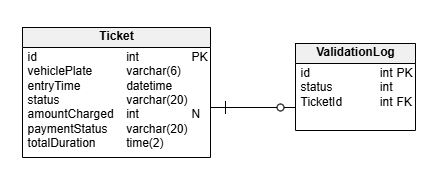
Entity: Notification
| Nombre | Categoría | Propósito |
|---|---|---|
| Notification | Entity | Representa una notificación que será enviada al usuario. |
Atributos:
| Nombre | Tipo de dato | Visibilidad | Descripción |
|---|---|---|---|
| id | Long | Private | Identificador único de la notificación. |
| message | String | Private | Contenido del mensaje de la notificación. |
| status | String | Private | Estado de la notificación (enviado, pendiente, fallido). |
| recipient | String | Private | Usuario al que se le envía la notificación. |
| timestamp | LocalDate | Private | Fecha y hora en que se generó la notificación. |
Controller: NotificationController
| Nombre | Categoría | Propósito |
|---|---|---|
| NotificationController | Controller | Endpoints para gestionar las notificaciones. |
Atributos:
| Nombre | Tipo de dato | Visibilidad | Descripción |
|---|---|---|---|
| notificationService | INotificationService | Private | Servicio para gestionar operaciones de notificación. |
Métodos:
| Nombre | Tipo de retorno | Visibilidad | Descripción |
|---|---|---|---|
| Constructor | Void | Public | Constructor del controlador. |
| getNotificationByUserId | ResponseEntity |
Public | Obtener una notificación específica por el user ID. |
| createNotification | ResponseEntity |
Public | Crear una nueva notificación. |
| deleteNotification | ResponseEntity |
Public | Eliminar una notificación específica. |
DTO: NotificationRequestDto
| Nombre | Categoría | Propósito |
|---|---|---|
| NotificationRequestDto | DTO | Clase para crear una notificación. |
Atributos:
| Nombre | Tipo de dato | Visibilidad | Descripción |
|---|---|---|---|
| message | String | Private | Mensaje de la notificación. |
| recipient | String | Private | Usuario destinatario de la notificación. |
| deliveryMethod | String | Private | Método de entrega (ej., SMS, Email, Push Notification). |
DTO: NotificationResponseDto
| Nombre | Categoría | Propósito |
|---|---|---|
| NotificationResponseDto | DTO | Clase para devolver la respuesta de la notificación. |
Atributos:
| Nombre | Tipo de dato | Visibilidad | Descripción |
|---|---|---|---|
| id | Long | Private | Identificador único de la notificación. |
| message | String | Private | Mensaje de la notificación. |
| recipient | String | Private | Usuario destinatario de la notificación. |
| status | String | Private | Estado de la notificación (enviado, pendiente, fallido). |
| timestamp | LocalDateTime | Private | Fecha y hora de creación de la notificación. |
Service Interface: INotificationService
| Nombre | Categoría | Propósito |
|---|---|---|
| INotificationService | Service | Operaciones para la gestión de las notificaciones. |
Métodos:
| Nombre | Tipo de retorno | Visibilidad | Descripción |
|---|---|---|---|
| sendNotification | Void | Public | Envía una notificación a un usuario. |
| getNotificationStatus | String | Public | Obtiene el estado de entrega de la notificación. |
| getNotificationsHistory | List |
Public | Obtiene el historial de notificaciones enviadas. |
| updateNotificationStatus | Void | Public | Actualiza el estado de una notificación (ej., fallida, exitosa). |
Service Implementation: NotificationServiceImpl
| Nombre | Categoría | Propósito |
|---|---|---|
| NotificationServiceImpl | Service | Implementación de la lógica de negocio para las notificaciones. |
Atributos:
| Nombre | Tipo de dato | Visibilidad | Descripción |
|---|---|---|---|
| notificationRepository | INotificationRepository | Private | Repositorio para acceder a los datos de notificaciones. |
| modelMapper | ModelMapper | Private | Mapper para transformar entidades y DTOs. |
| restTemplate | RestTemplate | Private | Cliente para hacer llamadas HTTP a servicios externos. |
Métodos:
| Nombre | Tipo de retorno | Visibilidad | Descripción |
|---|---|---|---|
| Constructor | Void | Public | Constructor que inyecta dependencias. |
| sendNotification | Void | Public | Envía una notificación a través de los servicios externos. |
| getNotificationStatus | String | Public | Obtiene el estado actual de la notificación. |
| getNotificationsHistory | List |
Public | Obtiene todas las notificaciones previas. |
| updateNotificationStatus | Void | Public | Actualiza el estado de la notificación en la base de datos. |
Repository Interface: INotificationRepository
| Nombre | Categoría | Propósito |
|---|---|---|
| INotificationRepository | Repository | Repositorio para manejar las notificaciones almacenadas. |
Métodos:
| Nombre | Tipo de retorno | Visibilidad | Descripción |
|---|---|---|---|
| saveNotification | Notification | Public | Guarda una nueva notificación en la base de datos. |
| findById | Optional |
Public | Encuentra una notificación específica por su ID. |
| findByRecipient | List |
Public | Encuentra todas las notificaciones de un usuario específico. |
| findByStatus | List |
Public | Encuentra las notificaciones por su estado (enviado, pendiente). |
| deleteNotification | Void | Public | Elimina una notificación de la base de datos. |


Propósito
Agrupa los datos extendidos de los distintos tipos de usuario (no credenciales):
preferencias, información de contacto, métricas de uso, etc.
| Agregado | Rol |
|---|---|
DriverProfile <<Aggregate Root>> |
Información de un conductor (licencia, preferencia de pago, vehículo favorito). |
AdminProfile <<Aggregate Root>> |
Datos de un administrador (scope de parking, contacto directo). |
| Atributo | Tipo |
|---|---|
| id | Long |
| userId | UserId |
| fullName | String |
| licenseNumber | String |
| favouritePaymentCard | String |
| preferredLanguage | Language enum |
| Atributo | Tipo |
|---|---|
| id | Long |
| userId | UserId |
| fullName | String |
| phoneNumber | String |
| managedSiteIds | List |
Language → ES · EN · PT
| Controller | Endpoints |
|---|---|
| ProfilesController | GET /profiles/{userId} · POST /profiles/driver · POST /profiles/admin |
| Service | Operaciones |
|---|---|
| IProfileService | createDriverProfile · createAdminProfile · getProfileByUserId |
Impl.: ProfileServiceImpl (usa ModelMapper + ProfileRepository).
| Repository | Extiende |
|---|---|
| ProfileRepository | JpaRepository<BaseProfile,Long> con estrategia single-table + dtype |


Mozilla Developer Network. (s.f.). HTML. Recuperado el 20 de abril de 2025, de https://developer.mozilla.org/en-US/docs/Web/HTML
Mozilla Developer Network. (s.f.). CSS. Recuperado el 20 de abril de 2025, de https://developer.mozilla.org/en-US/docs/Web/CSS
Mozilla Developer Network. (s.f.). JavaScript. Recuperado el 20 de abril de 2025, de https://developer.mozilla.org/en-US/docs/Web/JavaScript
Angular. (s.f.). Overview. Recuperado el 20 de abril de 2025, de https://angular.dev/overview